js面试题
[toc]
千锋精品教程，好学得不像实力派！
一. HTML5面试题
1. 如何理解HTML5结构语义化？
简单来说，我们可以理解为：用正确的标签做正确的事情。
段落用 p 标签，标题用 h 系列标签，边栏用 aside 标签，主要内容用 main 标签。
对开发者：
便于团队的开发和维护。
在没有加载 CSS 的情况下也能呈现较好的内容结构与代码结构，易于阅读。
对浏览器：
有利于 SEO ，搜索引擎的爬⾍依赖于标签来确定上下⽂和各个关键字的权重。
方便其他设备的解析（如屏幕阅读器、盲人阅读器等），利于无障碍阅读，提⾼可访问性。
2. html5的新特性？
HTML5 现在已经不是 SGML 的子集，主要是关于图像，位置，存储，多任务等功能的增加
- 用于媒介回放的 video 和 audio 元素
- 本地离线存储 localStorage 长期存储数据，浏览器关闭后数据不丢失
- sessionStorage 的数据在浏览器关闭后自动删除
- 语意化更好的内容元素，比如 article、footer、header、nav、section
- 表单控件，calendar、date、time、email、url、search
- 新的技术webworker, websocket, Geolocation
移除的元素：
- 纯表现的元素：basefont，big，center，font, s，strike，tt，u
- 对可用性产生负面影响的元素：frame，frameset，noframes
支持HTML5新标签：
- IE8/IE7/IE6支持通过document.createElement方法产生的标签
- 可以利用这一特性让这些浏览器支持HTML5新标签
- 浏览器支持新标签后，还需要添加标签默认的样式
当然也可以直接使用成熟的框架、比如html5shim
1 | <!--[if lt IE 9]> |
- 如何区分HTML5： DOCTYPE声明\新增的结构元素\功能元素
3. 请描述一下 cookies，sessionStorage 和 localStorage 的区别？
cookie是网站为了标示用户身份而储存在用户本地终端（Client Side）上的数据（通常经过加密）
cookie数据始终在同源的http请求中携带（即使不需要），记会在浏览器和服务器间来回传递
sessionStorage和localStorage不会自动把数据发给服务器，仅在本地保存存储大小：
cookie数据大小不能超过4ksessionStorage和localStorage虽然也有存储大小的限制，但比cookie大得多，可以达到5M或更大
有期时间：
localStorage存储持久数据，浏览器关闭后数据不丢失除非主动删除数据sessionStorage数据在当前浏览器窗口关闭后自动删除cookie设置的cookie过期时间之前一直有效，即使窗口或浏览器关闭
4. 浏览器的渲染机制一般分为几个步骤?
处理
HTML并构建DOM树。处理
CSS构建CSSOM树。将
DOM与CSSOM合并成一个渲染树。根据渲染树来布局，计算每个节点的位置。
调用
GPU绘制，合成图层，显示在屏幕上。注意：
在构建 CSSOM 树时，会阻塞渲染，直至 CSSOM 树构建完成。并且构建 CSSOM 树是一个十分消耗性能的过程，所以应该尽量保证层级扁平，减少过度层叠，越是具体的 CSS 选择器，执行速度越慢
当 HTML 解析到 script 标签时，会暂停构建 DOM，完成后才会从暂停的地方重新开始。也就是说，如果你想首屏渲染的越快，就越不应该在首屏就加载 JS 文件。
5. 重绘（Repaint）和回流（Reflow）
- 重绘是当节点需要更改外观而不会影响布局的，比如改变 color 就叫称为重绘
- 回流是布局或者几何属性需要改变就称为回流（需要计算它们在设备视口(viewport)内的确切位置和大小）
回流必定会发生重绘，重绘不一定会引发回流。回流所需的成本比重绘高的多，改变深层次的节点很可能导致父节点的一系列回流
所以以下几个动作可能会导致性能问题：
- 添加或删除可见的DOM元素
- 元素的位置发生变化
- 元素的尺寸发生变化（包括外边距、内边框、边框大小、高度和宽度等）
- 内容发生变化，比如文本变化或图片被另一个不同尺寸的图片所替代。
- 定位或者浮动
- 浏览器的窗口尺寸变化（因为回流是根据视口的大小来计算元素的位置和大小的）
减少重绘和回流
批量修改DOM
对于复杂动画效果,使用绝对定位让其脱离文档流
css3硬件加速（GPU加速）transform、opacity、filters这些动画不会引起回流重绘
6. 简述data:属性的用法（如何设置，如何获取），有何优势？
data-* 的值的获取和设置，2种方法：
1）传统方法 getAttribute() 获取data-属性值； setAttribute() 设置data-属性值
getAttribute() 获取data-属性值；
setAttribute() 设置data-属性值
2)HTML5新⽅法
例如 data-qfedu
dataset.qfedu 获取data-qfedu属性值
dataset.qfedu = “赵钱孙李” 设置data-qfedu属性值
注意：
传统⽅法⽆兼容性问题，但是不够优雅、⽅便
HTML5新⽅法很优雅、⽅便，但是有兼容性问题。
优势：⾃定义的数据可以让⻚⾯拥有更好的交互体验（不需要使⽤ Ajax 或去服务端查询数据）
二. CSS面试题
1. display: none; 与 visibility: hidden; 的区别
- 联系：它们都能让元素不可见
- 区别：
display:none;会让元素完全从渲染树中消失，渲染的时候不占据任何空间；visibility: hidden;不会让元素从渲染树消失，渲染师元素继续占据空间，只是内容不可见- 修改常规流中元素的
display通常会造成文档重排。修改visibility属性只会造成本元素的重绘
2. 外边距折叠(collapsing margins)
- 毗邻的两个或多个
margin会合并成一个margin，叫做外边距折叠。规则如下：- 两个或多个毗邻的普通流中的块元素垂直方向上的
margin会折叠 - 浮动元素或
inline-block元素或绝对定位元素的margin不会和垂直方向上的其他元素的margin折叠 - 创建了块级格式化上下文（BFC）的元素，不会和它的子元素发生margin折叠
- 两个或多个毗邻的普通流中的块元素垂直方向上的
3. z-index是什么？在position的值什么时候可以触发?
z-index 属性设置元素的堆叠顺序。拥有更⾼堆叠顺序的元素总是会处于堆叠顺序较低的元素的前⾯，当 脱离⽂档流内容较多，并且相互重叠的时候，就有可能发⽣本想完全显示的内容被其他内容遮挡的结 果，这时我们就需要⼈为指定哪个层在上⾯，哪个在下⾯，z-index属性就是⼲这个⽤的。
注意：Z-index 仅能在定位元素上奏效.
在position的值是relative、absolute、fixed、sticky时候可以触发
4. 简述box-sizing的有效值以及所对应的盒模型规则
box-sizing 属性允许您以特定的⽅式定义匹配某个区域的特定元素。
语法：box-sizing: content-box|border-box|inherit;
1）box-sizing:content-box；这是由 CSS2.1 规定的宽度⾼度⾏为。宽度和⾼度分别应⽤到元素的内容框。 在宽度和⾼度之外绘制元素的内边距和边框。是默认值。如果你设置⼀个元素的宽为100px，那么这个元 素的内容区会有100px 宽，并且任何边框和内边距的宽度都会被增加到最后绘制出来的元素宽度中
2）box-sizing:border-box；为元素指定的任何内边距和边框都将在已设定的宽度和⾼度内进⾏绘制。告诉 浏览器去理解你设置的边框和内边距的值是包含在width内的。也就是说，如果你将⼀个元素的width设 为100px,那么这100px会包含其它的border和padding，内容区的实际宽度会是width减去border + padding 的计算值。⼤多数情况下这使得我们更容易的去设定⼀个元素的宽⾼
3）box-sizing:inherit;；规定应从⽗元素继承 box-sizing 属性的值
5. 移动端适配怎么做？
1） meta viewport（视⼝）
移动端初始视⼝的⼤⼩为什么默认是980px？
因为世界上绝⼤多数PC⽹⻚的版⼼宽度为 980px ，如果⽹⻚没有专⻔做移动端适配，此时⽤⼿机访问⽹ ⻚旁边刚好没有留⽩，不过⻚⾯缩放后⽂字会变得⾮常⼩。
为了解决⻚⾯缩放的体验问题，在⽹⻚代码的头部，加⼊⼀⾏viewport元标签。
这⾥的device-width告诉浏览器，将视⼝的宽度设置为设备宽度（这个宽度是⼈为预设的，不设的话就是 980px）。 属性含义
1 | initial-scale：第⼀次进⼊⻚⾯的初始⽐例 |
2） 图⽚适配
img { max-width: 100%; } 此时图⽚会⾃动缩放，同时图⽚最⼤显示为其⾃身的100%（即最⼤只 可以显示为⾃身那么⼤） 为什么不⽤ img { width: 100%; } ？ 当容器⼤于图⽚宽度时，图⽚会⽆ 情的拉伸变形
3） 媒体查询
为什么要媒体查询？
针对不⽤的设备提前为⽹⻚设定各种 CSS 样式CSS3中的Media Query模块，⾃动检测屏幕宽度，然后加载 相应的CSS⽂件
语法举例
1 | @media screen and (min-width:1200px){ |
当屏幕宽度⼤于1200px时，背景⾊变为红⾊
4） 动态 rem ⽅案
为什么要⽤rem？
和媒体查询配合，实现响应式布局
px、em、rem 有什么不同？
px是pixel（像素），是屏幕上显示数据的最基本的点，在HTML中，默认的单位就是px；em 是⼀个相对 ⼤⼩，相对于⽗元素font-size的百分⽐⼤⼩rem 是相对于根元素的font-size
⽤法示例
1 | <!-- |
6. 什么是CSS3 transform? transition? animation? 区别是什么？
1 | CSS3属性中关于制作动画的三个属性：Transform,Transition,Animation。 |
7. ⽗元素和⼦元素宽⾼不固定，如何实现⽔平垂直居中
1 | <!-- |
1 | <!-- |
8. 假设高度默认100px ，请写出三栏布局，其中左栏、右栏各为300px，中间自适应。

- 方法1：浮动
- 方法2：绝对定位
- 方法3：
flexbox。移动开发里经常用到。
方法1、浮动：
左侧设置左浮动，右侧设置右浮动即可，中间会自动地自适应。
1 | <!-- |
方法2、绝对定位：
左侧设置为绝对定位，
left：0px。右侧设置为绝对定位，right：0px。中间设置为绝对定位，left和right都为300px，即可。中间的宽度会自适应。
1 | <!-- |
方法3、flexbox布局
将左中右所在的容器设置为
display: flex，设置两侧的宽度后，然后让中间的flex = 1，即可。
1 | <!-- |
三. JS高频面试题
1. 介绍JS有哪些内置对象？
- 数据封装类对象：Object、Array、Boolean、Number、String
- 其他对象：Function、Arguments、Math、Date、RegExp、Error
- ES6新增对象：Symbol（标识唯一性的ID）、Map、Set、Promises、Proxy、Reflect
2. 如何最小化重绘(repaint)和回流(reflow)？
需要要对元素进行复杂的操作时，可以先隐藏(display:”none”)，操作完成后再显示
需要创建多个DOM节点时，使用DocumentFragment创建完后一次性的加入document
缓存Layout属性值，如：var left = elem.offsetLeft; 这样，多次使用 left 只产生一次回流
尽量避免用table布局（table元素一旦触发回流就会导致table里所有的其它元素回流）
3. Javascript作用域链?
- 全局函数无法查看局部函数的内部细节，但局部函数可以查看其上层的函数细节，直至全局细节
- 如果当前作用域没有找到属性或方法，会向上层作用域[[Scoped]]查找，直至全局函数，这种形式就是作用域链
4. 数据请求
(1) XHR
1 | var xhr = new XMLHttpRequest(); |
(2) fetch （w3c）
1 | fetch("url", |
(3) jsonp (解决跨域)
1 | 动态创建script src指向没有跨域限制， onload |
5. 跨域和同源策略
所谓的同源策略其实是浏览器的一种机制，只允许在同源，也就是同协议、同域名、同端口的的情况下才能进行数据交互。 但是我们在开发项目的过程中， 往往一个项目的接口不止一个域，所以往往就需要做跨域的处理，通常的跨域方式有这么几种：
1）
JSONP，主要依赖的是script标签不受同源策略影响，src指向某一个接口的地址， 同步需要传递callback回调函数名字， 这样当接口调用成功后， 本地创建的全局回调函数就会执行， 并且接收到数据。不使用img标签的原因是因为img标签无法执行js语句
CORS，依赖服务端对前端的请求头信息进行放行，不做限制。
1 | Access-Control-Allow-Origin配置成* |
代理访问，前端访问不存在跨域问题的代理服务器，代理服务器再去访问目标服务器（服务器之间没有跨域限制）
6. 面向对象
(1)构造函数
1 | function Test(name,age){ |
(2)原型
1 | //内存只有一份 |
(3)继承
1 | //构造函数继承 |
(4)原型链
原型链的基本原理：任何一个实例，通过原型链，找到它上面的原型，该原型对象中的方法和属性，可以被所有的原型实例共享。
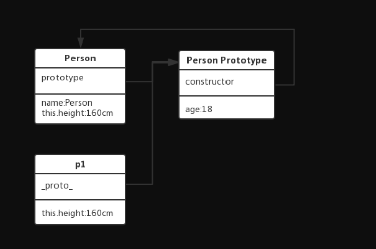
7. 闭包
闭包是JS中的一种特性，往往用于解决一些特定的问题，当A函数中返回了B函数， 并且返回的B函数中有使用到A函数中的局部变量（包含参数）就会形成一个特性的形态，就叫闭包。
此时，理论上来说A函数执行完成后，生成了B函数后，应该被垃圾回收机制回收，但是因为生成的B函数还在使用A函数中的局部变量， 就会导致A函数没有及时回收，导致内存泄露。
1 | //1. 函数防抖(搜索查询) |
8. 数组去重
1 | var arr = [1,2,3,4,3,4]; |
9. 数组常用的合并方法
concat
[…a, …b]展开运算符
[a, b].flat()
……
10. cookie和session
cookie和session是为HTTP请求挂载状态的，也就说在前后端交互的过程中，往往需要利用cookie或者session来对客户端进行标记。
传统的cookie验证方式是这样的：
1.
客户端在向服务端登录的时候，服务端直接通过响应头上set-cookie字段，为浏览器客户端注入cookie，或者将对应的信息放置在响应内容中，客户端自行将其存储在cookie中。
2.
客户端在每次发送请求的时候就可以将cookie携带在请求头上进行数据的传递，服务端拿到此次请求头中的cookie进行验证。
3.
客户端自行设置cookie或者由服务端设置cookie的时候也去设置此cookie的过期时间，当cookie过期后相当于登录过期了。
session的验证方式：
1.
客户端在向服务端登录的时候，服务端自行建立客户信息表，并且建立生命周期机制，服务端再将此信息通过cookie或者数据直接返回的形式，返回给客户端。
2.
客户端拿到验证信息后，可以选择存储在cookie中获取localStorage中都可以。
3.
每次请求的时候携带验证信息（cookie就自动写到，localStorage需要取出携带）
4.
服务端接收到请求后，判断该验证信息是否过期
cookie和session本质是都是利用cookie或者localStorage来进行数据交互，而cookie和localStorage又都有跨域的限制：
cookie通过设置domain可以实现一级域名下的二级域名之间可以互相访问，localStorage则不能跨域。
11. 线程和进程的区别
进程是资源分配的最小单元，线程是代码执行的最小单元。
一个应用程序可能会开启多个进程，进程之间数据不共享，一个进程内部可以开启多个线程，线程之间的数据可以共享的，所以多线程的情况下，往往要考虑的是线程间的执行顺序问题。
浏览器其实也可以通过webWorkers开启多线程。
12.协商缓存和强缓存区别
协商缓存和强缓存指的都是浏览器对静态资源文件的缓存机制。描述的就是什么时候去服务器请求，什么时候直接读取缓存中的文件。
强缓存是客户端直接查看本地的缓存文件是否过期，如果没有过期就直接取用。
- 查看过期的方法主要是依赖响应头上的expires(绝对时间)和cache-control（相对时间）上的时间来对比的
协商缓存指的是客户端去询问服务器对应的文件是否有更新，如果有更新才会重新请求。
- 依靠的是响应头上的last-modified（最后更新时间）及etag(内容变更的标识)来确认文件是否有更新。
一个文件是否重新请求要经过强缓存和协商缓存的完整过程后才能决定。
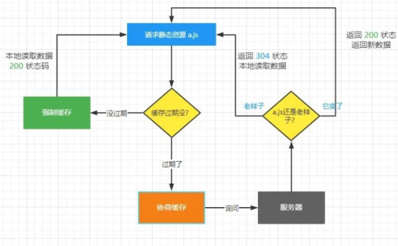
1.
强制缓存和协商缓存都针对静态资源
2.
强制缓存在前，协商缓存在后。
3.
资源未过期触发强制缓存，资源过期后再触发协商缓存。
4.
判断过期的方法expires（绝对时间）、cache-control（相对时间）
5.
判断资源是否有更新（Last-Modified 和 ETag）
需要注意的是，即使是静态资源，也是依靠url来进行缓存的，也就是说只要是url地址不一样，就一定会去获取最新的数据。
所以我们往往会有这样的需求，在静态文件的src后面添加一个时间戳，获取在打包的时候动态的生成带有hash值的文件名，这样可以阻止浏览器缓存，使用户获取到最新的文件，使用到最新的功能。
13. http和https区别以及哪个更安全
HTTP明文传输，数据没有加密，安全性较差，HTTPS（HTTP + SSL），数据传输过程是加密的，安全性要好一些。
使用HTTPS协议要经过SSL认证来申请SSL证书，认证拿到证书的过程一般都是收费的，所以成本略高。
HTTP的速度要比HTTPS要更快一些，就是因为HTTP和服务器建立连接要通过TCP的三次握手，客户端和服务端只需要交换3个包，HTTPS在进行连接的时候除了要TCP的3个包，还要加上SSL握手的9个包，一共12个包。
默认端口不同，http默认80端口，https默认443接口。
HTTPS认证是怎么认证的？
客户端和服务端进行数据传输之前，先通过证书对双方进行身份验证：
1.
客户端在发送SSL握手信息给服务端要求连接
2.
服务端会将证书发送给客户端
3.
客户端检查服务端证书，确认这个这个证书的签发机构是否值得信任，如果检查有问题，客户端会将是否继续通讯的决定权交给客户端，如果检查无误，或者用户选择继续，就表现客户端认可服务端身份。
4.
服务端要求客户端发送证书，并且检查是否通过验证， 失败就关闭连接，成功的话就得到客户端的公钥
至此，服务端及客户端双方身份认证接受，双方都确保彼此身份可靠。
HTTPS一定安全吗？
不一定，HTTPS往往无法阻止中间人攻击。
A和B进行数据交互的时候，可以采用加密的方式，加密分为对称和不对称两种。
对称加密只要被破解出加密方式，就很容易泄露信息。
A生成一个秘钥ka，B生成一个秘钥kb；ka用于解密A加密的数据，kb用于解密B加密的数据。
A将ka传递给B，B将kb传递A，这样的话，A再给B传递信息的时候，B接受到之后用ka来进行解密。
HTTPS进行密文传输的时候采用的不对称加密的方式。但是如果有中间人拦截请求后模仿A和B来与B和A进行通信的时候也会泄露数据。
14.对于工作中的跨域问题你是怎么解决的
在线上的各种环境中（开发、测试、生产）环境一般是不会有跨域问题的，因为服务器和前端资源一般是会部署在同一个域的服务器下的，但是也有端口或者不同域的情况，这些时候往往都是后端去利用CORS来处理的跨域问题。
在本地开发的过程中，本地服务器访问测试服务器接口的，也基本都是后端去处理CORS跨域，但是有些时候也可能需要前端在脚手架对应的devServer中配置Proxy来进行开发时候的跨域处理。
在一些极少的情况下加，项目中可能会访问一些第三方的Api，比如定位、天气等等接口的时候，可能会根据接口需求进行jsonp的跨域处理。
15. 事件循环
1 | （1）所有同步任务在主线程上执行，形成一个执行栈 |
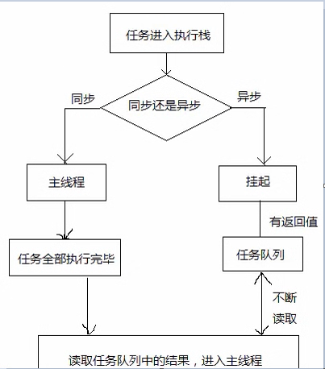
16. 微任务和宏任务
Promise的出现让问题变复杂了, 它跟setTimeout 优先级？ 上面的事件循环解释不够用了。
1 | console.log('script start') |
1 | 所有任务分为宏任务（macrotask ）和微任务（microtask ） 两种。 |

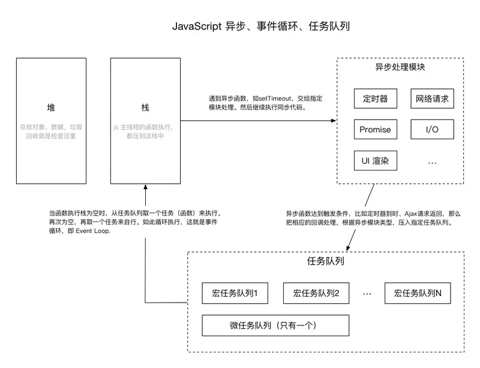
17. http相关
http状态码有那些？分别代表是什么意思？
1 | [ |
18. 一个页面从输入 URL 到页面加载显示完成，这个过程中都发生了什么？
- 01.浏览器查找域名对应的IP地址(DNS 查询：浏览器缓存->系统缓存->路由器缓存->ISP DNS 缓存->根域名服务器)
- 02.浏览器向 Web 服务器发送一个 HTTP 请求（TCP三次握手）
- 03.服务器 301 重定向（从 http://example.com 重定向到 http://www.example.com）
- 04.浏览器跟踪重定向地址，请求另一个带 www 的网址
- 05.服务器处理请求（通过路由读取资源）
- 06.服务器返回一个 HTTP 响应（报头中把 Content-type 设置为 ‘text/html’）
- 07.浏览器进 DOM 树构建
- 08.浏览器发送请求获取嵌在 HTML 中的资源（如图片、音频、视频、CSS、JS等）
- 09.浏览器显示完成页面
- 10.浏览器发送异步请求
19. 前端攻击
1) CSRF的基本概念、缩写、全称
CSRF（Cross-site request forgery）：跨站请求伪造。

用户是网站A的注册用户，且登录进去，于是网站A就给用户下发
cookie。
从上图可以看出，要完成一次
CSRF攻击，受害者必须满足两个必要的条件：
- 登录受信任网站
A，并在本地生成Cookie。（如果用户没有登录网站A，那么网站B在诱导的时候，请求网站A的api接口时，会提示你登录） - 在不登出
A的情况下，访问危险网站B（其实是利用了网站A的漏洞）。
我们在讲
CSRF时，一定要把上面的两点说清楚。
温馨提示一下，
cookie保证了用户可以处于登录状态，但网站B其实拿不到cookie。
举个例子，前段时间里，微博网站有个
api接口有漏洞，导致很多用户的粉丝暴增。
CSRF的防范措施
方法一、Token 验证：（用的最多）
- 服务器发送给客户端一个
token； - 客户端提交的表单中带着这个
token。 - 如果这个
token不合法，那么服务器拒绝这个请求。
方法二：隐藏令牌：
- 把
token隐藏在http的head头中。
方法二和方法一有点像，本质上没有太大区别，只是使用方式上有区别。
方法三、Referer 验证：
Referer指的是页面请求来源。意思是，只接受本站的请求，服务器才做响应；如果不是，就拦截。
2) XSS的攻击原理
XSS攻击的核心原理是：不需要你做任何的登录认证，它会通过合法的操作（比如在url中输入、在评论框中输入），向你的页面注入脚本（可能是js、hmtl代码块等）。
最后导致的结果可能是：
- 盗用
Cookie - 破坏页面的正常结构，插入广告等恶意内容
D-doss攻击
XSS的防范措施主要有三个：
1. 编码：
对用户输入的数据进行
HTML Entity编码。
2、过滤：
- 移除用户输入的和事件相关的属性。如
onerror可以自动触发攻击，还有onclick等。（总而言是，过滤掉一些不安全的内容） - 移除用户输入的
Style节点、Script节点、Iframe节点。（尤其是Script节点，它可是支持跨域的呀，一定要移除）。
3) CSRF 和 XSS 的区别
面试官还可能喜欢问二者的区别。
CSRF：是利用网站A本身的漏洞，去请求网站A的api。XSS：是向网站A注入JS代码，然后执行JS里的代码，篡改网站A的内容。
四. ES6-ES13高频面试题
1. ES6新增的方法
let和const，解构赋值、模板字符串、箭头函数。
Symbol、Map、Set三种常用的数据类型。
Proxy重新定义了数据劫持的能力
Reflect定义了一套标准化的数据操作的方式
Promise确实的解决了异步逻辑嵌套及回调地狱问题。定义了异步逻辑的三种状态pending、rejected、fullfilled, 搭配then、catch、all、race等方法以及async await语法糖，大量简化了异步操作。
Generator函数，可以将异步逻辑划片执行。
- Generator 函数是 ES6 提供的一种异步编程解决方案
- Generator 函数是一个状态机，封装了多个内部状态。
- 执行 Generator 函数会返回一个遍历器对象，也就是说，Generator 函数除了状态机，还是一个遍历器对象生成函数。返回的遍历器对象，可以依次遍历 Generator 函数内部的每一个状态。
新增了class类的概念
ES6 Modules
2. var, let, const的区别
ES6新增了定义变量的关键字 let和const， 分别用于定义块级变量和常量
let， const不会声明提前， 存在暂时性死区
外部无法使用到内部的let和const定义的变量， 存在块级作用域限制]
const 定义的常量， 无法更改。
1 | if(true){ |
3. 箭头函数
箭头函数是ES6推出的，所以在低版本浏览器是有兼容问题的，语法简介明了，逻辑更清晰。
箭头函数没有自己的this，this指向外部的this，并且this会在创建的时候就绑定好.
1 | const fn1 = function() { |
1 | // 在箭头函数定义的位置往上数，这一行是可以打印出 this 的 |
4. 解构
1 | let {type,payload} = data; // {type:"",payload:""} |
5 … 展开合并
1 | [...arr1,...arr2] |
6. promise
1 | //异步处理方案 |
7 .class (语法糖 => 构造函数,babel-loader)
1 | class Person{ |
8 .模块化
1 | import obj from "./a" ; |
9. 异步遍历器生成函数(大厂面试)
Generator 函数返回一个同步遍历器，异步 Generator 函数的作用，是返回一个异步遍历器对象。在语法上，异步 Generator 函数就是async函数与 Generator 函数的结合。
1 | function timer(t) { |
五. 工程化&代码管理高频面试题
1. git常用命令以及工作中都怎么工作
1 | git init 初始化仓库 |
公司中每一个项目都会有一个对应的远端仓库（gitLab），我们需要创建账号并配置权限。
一般公司会有几个主要分支，分别对应4个环境，当代码更新的时候会通过流水线自动部署到对应的环境：
1.
发布分支（prod、master）这个分支代码对应的就是线上的代码
2.
UAT分支（uat），这个分支上的代码对应的是公司内部演示用的分支
3.
TEST分支（test），这个分支的代码是用于测试
4.
DEV分支（dev），研发自测分支
正常功能开发或者bug修复， 从dev分支拉取代码，进行开发就可以。
如果是解决线上bug，应该从master拉取一个分支（hotfix__）, 然后开发完成后将其合并到test或者uat，测试没有问题后，将其合并到master。还要将hotfix上对应的commit合并到dev分支， 专业dev分支也就修复了这个bug。
如果当前版本代码需要回退（功能不做了，要么要去先着急干别的）， 执行git reset –hard， 再回到当前的commit也是git reset 只不过需要注意，此时要通过git reflog来查看时间最后的一次commit。
2. sass和 scss的区别
1 | Sass 是一款强化 CSS 的辅助工具，它在 CSS 语法的基础上增加了变量 (variables)、嵌套 (nested rules)、混合 (mixins)、导入 (inline imports) 等高级功能，这些拓展令 CSS 更加强大与优雅。使用 Sass 以及 Sass 的样式库（如 Compass）有助于更好地组织管理样式文件，以及更高效地开发项目。 |
scss只是sass的一个语言版本，.scss文件的特点是层级靠{}来区分，.sass文件的特点的层级靠缩进来区分
3. 前端工程化工具
gulp&webpack
1 | gulp -src=>pipe(scss翻译).pipe(css 合并).pipe(css压缩)=>dist |
4. webpack配置并且是否熟知代码分割流程及操作
webpack包含mode模式、entry入口、output出口、plugins插件、loader、resolve、devServer开发服务器相关的基本配置。
在webpack中可以通过多入口的配置，每个入口都会去查询对应的依赖关系图，进行单独的代码。
在模块化开发过程中往往会将各种不同类型的文件都看做是模块来进行互相导入导出，比如将图片、css、sass之类的文件都可以导入到js文件中，但是在打包的过程中需要将这些文件都寻找到然后单独的分离出去，这样就需要用到对应的loader来进行文件处理，不同的文件、不同的loader，处理方式也不一样。
比如css文件可以利用style-loader将其代码生成style标签放入到head中，也可以利用minicssextra插件中 loader将其抽离成css文件。
img文件可以利用url-loader和file-loader对其进行base64的转化或者单独抽出。
组件模块化导入的时候可以采用懒加载的形式，就会单独打包对应的代码。
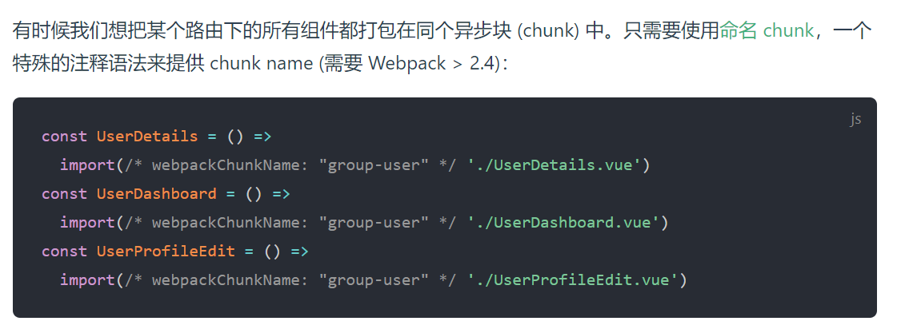
5. webpack 4大核心理念， 编译原理?
entry,output , loaders , pluguins
一切皆为模块，由于webpack只支持js文件，所以需要用loader 转换为webpack支持的模块，其中plugin 用于扩张webpack 的功能，在webpack构建生命周期的过程中，在合适的时机做了合适的事情。
6. webapck构建优化实战 (打包时间过长， 可以优化时间短点 20s)
（1）提取公共库， 避免重复引用。 使用 DllPlugin，把第三方库文件分离出来单独编译，并且缓存; 极大的减少业务页面的编译时间
dll方式也就是通过配置，告诉webpack指定库在项目中的位置，从而直接引入，不将其打包在内。
（2）happypack, 多线程解析文件，如babel-loader等耗时较长的。
还可以配合cache-loader使用。
（3）缓存 cache-loader
（4） loaders应尽可能配置解析路径include参数，排除路径exclude参数， 减少解析时查询范围。
（5）dev 阶段 devtool 设置成cheap-module-eval-source-map， 已经能满足调试需求， 编译能更快。
（6）product 阶段 去掉source-map
六. NodeJS高频面试题
1. nodejs 创建静态服务器？
要使用 HTTP 服务器和客户端，则必须
require('http')。
1 | const http = require('http'); |
1 | const http = require('http'); |
2. commonJS规范 vs ES6 模块化规范
> require导入， module.exports 导出
import 导入， export default 导出
区别：import {某个几个接口} from ‘antd’ //webpack (tree shaking 摇树优化)
var myview = require(“antd”) //导入整个接口
3. socket通信 聊天
WebSocket并不是全新的协议，而是利用了HTTP协议来建立连接。我们来看看WebSocket连接是如何创建的。
首先，WebSocket连接必须由浏览器发起，因为请求协议是一个标准的HTTP请求，格式如下：
1 | GET ws://localhost:3000/ws/chat HTTP/1.1 |
该请求和普通的HTTP请求有几点不同：
- GET请求的地址不是类似
/path/，而是以ws://开头的地址； - 请求头
Upgrade: websocket和Connection: Upgrade表示这个连接将要被转换为WebSocket连接； Sec-WebSocket-Key是用于标识这个连接，并非用于加密数据；Sec-WebSocket-Version指定了WebSocket的协议版本。
随后，服务器如果接受该请求，就会返回如下响应：
1 | HTTP/1.1 101 Switching Protocols |
该响应代码101表示本次连接的HTTP协议即将被更改，更改后的协议就是Upgrade: websocket指定的WebSocket协议。
版本号和子协议规定了双方能理解的数据格式，以及是否支持压缩等等。如果仅使用WebSocket的API，就不需要关心这些。
现在，一个WebSocket连接就建立成功，浏览器和服务器就可以随时主动发送消息给对方。消息有两种，一种是文本，一种是二进制数据。通常，我们可以发送JSON格式的文本，这样，在浏览器处理起来就十分容易。
为什么WebSocket连接可以实现全双工通信而HTTP连接不行呢？实际上HTTP协议是建立在TCP协议之上的，TCP协议本身就实现了全双工通信，但是HTTP协议的请求－应答机制限制了全双工通信。WebSocket连接建立以后，其实只是简单规定了一下：接下来，咱们通信就不使用HTTP协议了，直接互相发数据吧。
安全的WebSocket连接机制和HTTPS类似。首先，浏览器用wss://xxx创建WebSocket连接时，会先通过HTTPS创建安全的连接，然后，该HTTPS连接升级为WebSocket连接，底层通信走的仍然是安全的SSL/TLS协议。
websocket全双工, 双向通信 onopen onmessage onclose onerror
服务器：
1 | const WebSocket = require("ws") |
客户端：
1 | var ws = new WebSocket("ws://localhost:8080") |
4. mongoDB 基本操作(增删改查)
 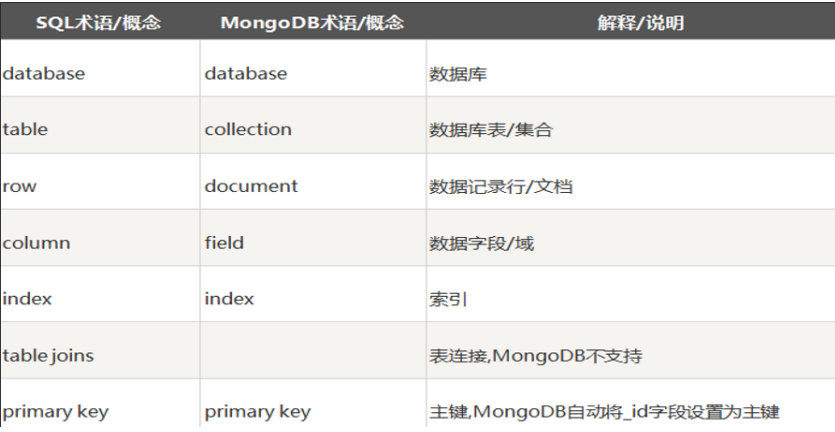
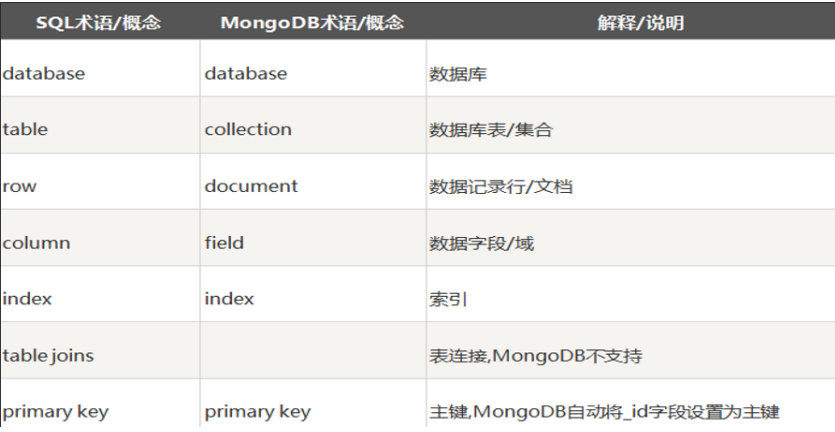
连接数据库
1 | const mongoose = require("mongoose") |
创建模型
1 | const mongoose = require("mongoose") |
增加数据
1 | UserModel.create({ |
查询数据
1 | UserModel.find({username:"qfedu"},["username","role","introduction","password"]).sort({createTime:-1}).skip(10).limit(10) |
更新数据
1 | UserModel.updateOne({ |
删除数据
1 | UserModel.deleteOne({_id}) |
5. token（jwt-json web token） 与 session配合cookie （登录，鉴权）
1. Cookie&Session
「HTTP 无状态」我们知道，HTTP 是无状态的。也就是说，HTTP 请求方和响应方间无法维护状态，都是一次性的，它不知道前后的请求都发生了什么。但有的场景下，我们需要维护状态。最典型的，一个用户登陆微博，发布、关注、评论，都应是在登录后的用户状态下的。「标记」那解决办法是什么呢？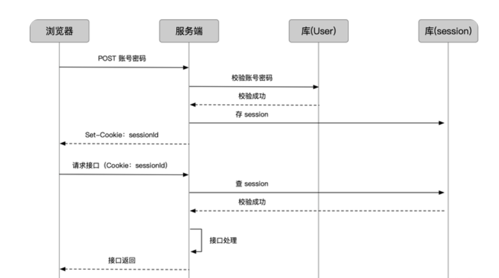
1 | const express = require("express"); |
2. JSON Web Token (JWT)
（1）介绍
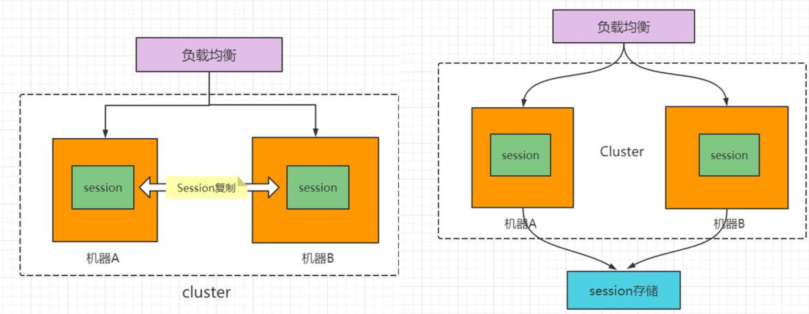
我为什么要保存这可恶的session呢， 只让每个客户端去保存该多好？
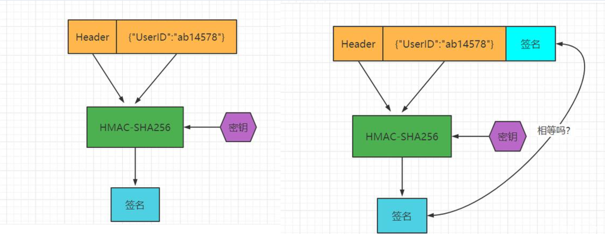
当然， 如果一个人的token 被别人偷走了， 那我也没办法， 我也会认为小偷就是合法用户， 这其实和一个人的session id 被别人偷走是一样的。
这样一来， 我就不保存session id 了， 我只是生成token , 然后验证token ， 我用我的CPU计算时间获取了我的session 存储空间 ！
解除了session id这个负担， 可以说是无事一身轻， 我的机器集群现在可以轻松地做水平扩展， 用户访问量增大， 直接加机器就行。 这种无状态的感觉实在是太好了！
缺点：
- 占带宽，正常情况下要比 session_id 更大，需要消耗更多流量，挤占更多带宽，假如你的网站每月有 10 万次的浏览器，就意味着要多开销几十兆的流量。听起来并不多，但日积月累也是不小一笔开销。实际上，许多人会在 JWT 中存储的信息会更多；
- 无法在服务端注销，那么久很难解决劫持问题；
- 性能问题，JWT 的卖点之一就是加密签名，由于这个特性，接收方得以验证 JWT 是否有效且被信任。对于有着严格性能要求的 Web 应用，这并不理想，尤其对于单线程环境。
注意：
CSRF攻击的原因是浏览器会自动带上cookie，而不会带上token；
以CSRF攻击为例：
cookie：用户点击了链接，cookie未失效，导致发起请求后后端以为是用户正常操作，于是进行扣款操作；
token：用户点击链接，由于浏览器不会自动带上token，所以即使发了请求，后端的token验证不会通过，所以不会进行扣款操作；
（2）实现
1 | //jsonwebtoken 封装 |
6. token 存储在 localStorage 里，当过期时过期的 token 怎么处理？
- 当前端进行页面跳转或者需要鉴权的操作时，会发送请求到后台，而 token 会跟随请求头一起发送，后台通过请求头接收到 token 时会进行判断，若是过期了，应该返回一个 401 的状态码给前端，前端接收到以后，应该重定向到登录页要求用户重新登陆。axios 拦截器。
7. 如何使用原生 Node.js 操做 cookie？
- 获取 cookie： req.headers.cookie
- 设置 cookie： res.writeHead(200, { ‘Set-Cookie’: ‘myCookie=test’, ‘Content-Type’: ‘text/plain’ })
8. nextTick 和 setImmediate 的区别是什么？
- nextTick 和 setImmediate 都是延迟加载。但是 nextTick 是放在当前队列的最后一个执行，setImmediate 是在下一个队列的队首执行
9. koa 和 express 的区别
- 最大的区别在于语法，experss 的异步采用的是回调函数的形式，而 koa1 支持 generator + yeild，koa2 支持 await/async，无疑更加优雅。
- 中间件的区别，koa 采用洋葱模型，进去顺序执行，出去反向执行，支持 context 传递数据 express 本身无洋葱模型，需要引入插件，不支持 context express 的中间件中执行异步函数，执行顺序不会按照洋葱模型，异步的执行结果有可能被放到最后，response 之前。 这是由于，其中间件执行机制，递归回调中没有等待中间件中的异步函数执行完毕，就是没有 await 中间件异步函数
- 集成度区别 express 内置了很多中间件，集成度高，使用省心， koa 轻量简洁，容易定制
10. koa 中间件的实现原理
- 每个中间件默认接受两个参数，第一个参数是 Context 对象，第二个参数是 next 函数。只要调用 next 函数，就可以把执行权转交给下一个中间件。
- 如果中间件内部没有调用 next 函数，那么执行权就不会传递下去。
- 多个中间件会形成一个栈结构，以“先进后出”的顺序执行。整个过程就像，先是入栈，然后出栈的操作。
11. 图片上传到服务器的过程
Multer 是一个 node.js 中间件，用于处理 multipart/form-data 类型的表单数据，它主要用于上传文件。
注意: Multer 不会处理任何非 multipart/form-data 类型的表单数据。
1 | npm install --save multer |
1 | //前后端分离-前端 |
Multer 会添加一个 body 对象 以及 file 或 files 对象 到 express 的 request 对象中。 body 对象包含表单的文本域信息，file 或 files 对象包含对象表单上传的文件信息。
1 | //前后端分离-后端 |
12. 什么是服务端渲染，服务端渲染的优点？
- 服务端渲染：页面渲染过程是在服务端完成，最终的 HTML 字符串，直接通过请求发送给客户端。
- 服务器端渲染的优势就是利于 SEO 优化，首屏加载快，因为客户端接收到的是完整的 HTML 页面。
13. Node.js 优缺点以及适用场景
- 优点
- Node.js 采用事件驱动、异步编程，为网络服务而设计。简单易学，可以很快上手做后端设计。
- Node.js 非阻塞模式的 IO 处理给 Node.js 带来在相对低系统资源耗用下的高性能与出众的负载能力，非常适合用作依赖其它 IO 资源的中间层服务。
- Node.js 轻量高效，可以认为是数据密集型分布式部署环境下的实时应用系统的完美解决方案。
- 缺点
- 单线程，可靠性低，一旦这个进程崩掉，那么整个 web 服务就崩掉了。
- 开源组件库质量参差不齐，更新快，向下不兼容
- 不适合做企业级应用开发，特别是复杂业务逻辑的，代码不好维护，事务支持不是很好。
- 适用场景
- 大量 Ajax 请求的应用，例如个性化应用，每个用户看到的页面都不一样，需要在页面加载的时候发起 Ajax 请求，NodeJS 能响应大量的并发请求。
- 实时 ：如在线聊天，实时通知推送等等
- 工具类应用：海量的工具，小到前端压缩部署，大到桌面图形界面应用程序
- 总而言之，NodeJS 适合运用在高并发、I/O 密集、少量业务逻辑的场景。
七. Vue高频面试题
1. 解释单向数据流和双向数据绑定
1 | 对于 Vue 来说，组件之间的数据传递具有单向数据流这样的特性称为单向数据流，单向数据流（Unidirectional data flow）方式使用一个上传数据流和一个下传数据流进行双向数据通信，两个数据流之间相互独立，单向数据流指只能从一个方向来修改状态。 |
2. Object.defineProperty有什么缺点
1 | 1、无法监听es6的Set、Map 变化； |
3. 对MVC，MVP，MVVM的理解
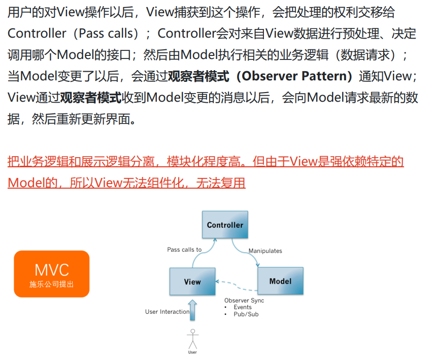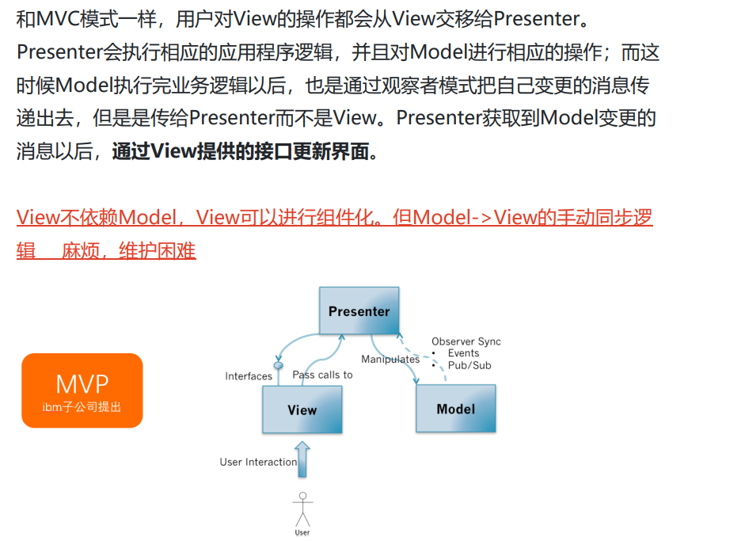
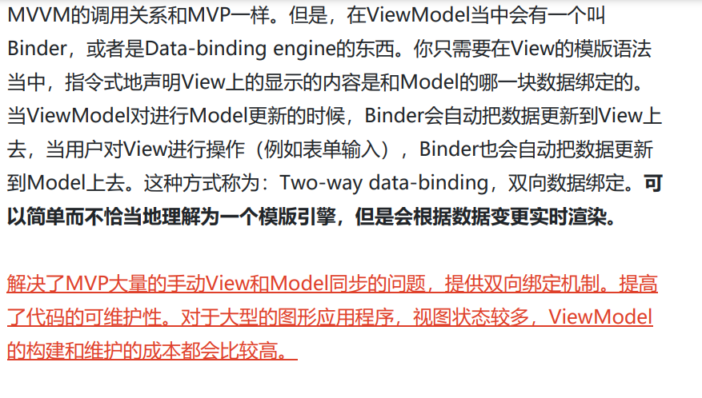 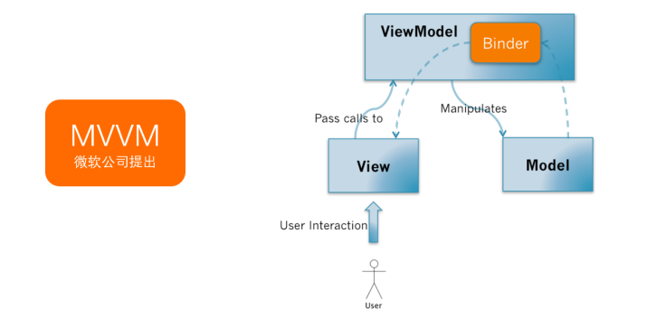4. 生命周期
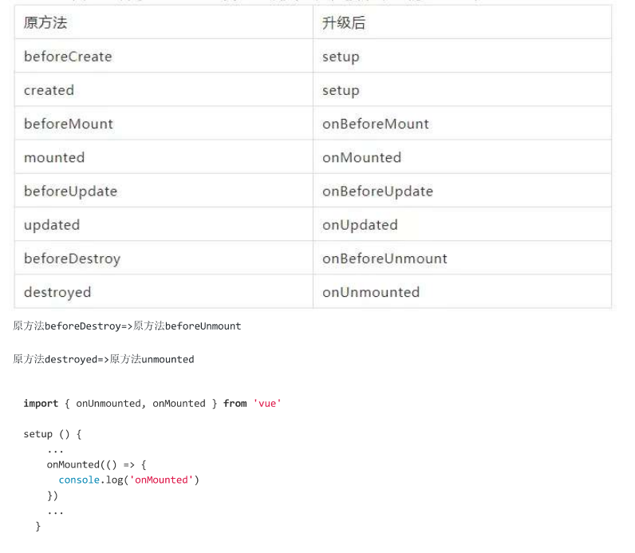5. 你知道Vue响应式数据原理吗？Proxy 与 Object.defineProperty 优劣对比？
1 | // 响应式原理 |
6. Composition API 的出现带来哪些新的开发体验，为啥需要这个？
1 | 1：在Compostion API 中时根据逻辑相关组织代码的，提高可读性和可维护性，类似于react的hook写法。 |
7. 对比 jQuery，Vue 有什么不同
1 | jQuery 专注视图层，通过直接操作 DOM 去实现页面的一些逻辑渲染；Vue 专注于数据层，通过数据的双向绑定，最终表现在 DOM 层面，减少了 DOM 操作。Vue 使用了组件化思想，使得项目子集职责清晰，提高了开发效率，方便重复利用，便于协同开发 |
8. 如何再Vue的单文件组件里的样式定义全局CSS？
1 | 在style标签上不加上scoped的属性，默认为全局css样式 |
9. 说一下$root，$parent，$refs
1 | $root，和$parent都能访问父组件的属性和方法，区别在于如果存在多级子组件，通过parent 访问得到的是它最近一级的父组件，通过root 访问得到的是根父组件。通过在子组件标签定义 ref 属性，在父组件中可以使用$refs 访问子组件实例。 |
10. Vue 中怎么自定义指令
1 | 通过directive来自定义指令，自定义指令分为全局指令和局部指令，自定义指令也有几个的钩子函数，常用的有bind和update，当 bind 和 update 时触发相同行为，而不关心其它的钩子时可以简写。 |
11. Vue 中怎么自定义过滤器 (vue3不支持)
1 | 通过filter来定义过滤器，过滤器分为全局和局部过滤器，过滤器的主体为一个普通的函数，来对数据进行处理，可以传递参数。当有局部和全局两个名称相同的过滤器时候，会以就近原则进行调用，即：局部过滤器优先于全局过滤器被调用。 |
12. Vue 等单页面应用的优缺点
1 | // 优点 |
13. Vue-router 使用params与query传参有什么区别
1 | // 用法上 |
14. Vue中 keep-alive 的作用
1 | keep-alive 是 Vue 内置的一个组件，可以使被包含的组件保留状态，或避免重新渲染。一旦使用keepalive包裹组件，此时mouted，created等钩子函数只会在第一次进入组件时调用，当再次切换回来时将不会调用。此时如果我们还想在每次切换时做一些事情，就需要用到另外的周期函数，actived和deactived，这两个钩子函数只有被keepalive包裹后才会调用。 |
15. Vue如何实现单页面应用
1 | 通常的url 地址由以下内容构成：协议名 域名 端口号 路径 参数 哈希值，当哈希值改变，页面不会发生跳转，单页面应用就是利用了这一点，给window注册onhashchange事件，当哈希值改变时通过location.hash就能获得相应的哈希值，然后就能跳到相应的页面。 |
16. 说出至少4种Vue当中的指令和它的用法？
1 | v-if(判断是否隐藏，用来判断元素是否创建) |
17. 如何实现一个路径渲染多个组件？
1 | 可以通过命名视图(router-view)，它容许同一界面中拥有多个单独命名的视图，而不是只有一个单独的出口。如果 router-view 没有设置名字，那么默认为 default。通过设置components即可同时渲染多个组件。 |
18. 如何实现多个路径共享一个组件？
1 | 只需将多个路径的component字段的值设置为同一个组件即可。 |
19. 如何监测动态路由的变化
1 | 可以通过watch方法来对$route进行监听，或者通过导航守卫的钩子函数beforeRouteUpdate来监听它的变化。 |
20. vue-router 中的 router-link上 v-slot属性怎么用？
1 | router-link 通过一个作用域插槽暴露底层的定制能力。这是一个更高阶的 API，主要面向库作者，但也可以为开发者提供便利，多数情况用在一个类似 NavLink 这样的自定义组件里。 |
21. Vue 如何去除url中的 #
1 | 将路由模式改为history |
22. $route 和 $router 的区别
1 | $route用来获取路由的信息的，它是路由信息的一个对象，里面包含路由的一些基本信息，包括name、meta、path、hash、query、params、fullPath、matched、redirectedFrom等。而$router主要是用来操作路由的，它是VueRouter的实例，包含了一些路由的跳转方法push，go, replace，钩子函数等 |
23. Vue 路由守卫
1 | vue-router 提供的导航守卫主要用来对路由的跳转进行监控，控制它的跳转或取消，路由守卫有全局的, 单个路由独享的, 或者组件级的。导航钩子有3个参数： |
24. Vue路由实现的底层原理
1 | 在Vue中利用数据劫持defineProperty在原型prototype上初始化了一些getter,分别是router代表当前Router的实例 、 route 代表当前Router的信息。在install中也全局注册了router-view,router-link,其中的Vue.util.defineReactive, 这是Vue里面观察者劫持数据的方法，劫持_route，当_route触发setter方法的时候，则会通知到依赖的组件。 |
25. 路由懒加载
Vue Router 支持开箱即用的动态导入，这意味着你可以用动态导入代替静态导入：
1 | // 将 |
26. 用过插槽吗？用的是具名插槽还是匿名插槽
1 | 用过，都使用过。插槽相当于预留了一个位置，可以将我们书写在组件内的内容放入，写一个插槽就会将组件内的内容替换一次，两次则替换两次。为了自定义插槽的位置我们可以给插槽取名，它会根据插槽名来插入内容，一一对应。 |
27. Vue-loader解释一下
1 | 解析和转换 .vue 文件，提取出其中的逻辑代码 script、样式代码 style、以及 HTML 模版 template，再分别把它们交给对应的 Loader 去处理。 |
28. Vue和React中diff算法区别
1 | vue和react的diff算法，都是忽略跨级比较，只做同级比较。vue diff时调动patch函数，参数是vnode和oldVnode，分别代表新旧节点。 |
29. 请你说一下 Vue 中 create 和 mount 的区别
1 | create为组件初始化阶段，在此阶段主要完成数据观测(data observer)，属性和方法的运算， watch/event 事件回调。然而，挂载阶段还没开始，此时还未生成真实的DOM，也就无法获取和操作DOM元素。而mount主要完成从虚拟DOM到真实DOM的转换挂载，此时html已经渲染出来了，所以可以直接操作dom节点。 |
30. axios是什么？怎么使用？描述使用它实现登录功能的流程?
1 | axios 是请求后台资源的模块。 通过npm install axios -S来安装，在大多数情况下我们需要封装拦截器，在实现登录的过程中我们一般在请求拦截器中来加入token，在响应请求器中通过判断后端返回的状态码来对返回的数据进行不同的处理。如果发送的是跨域请求，需在配置文件中 config/index.js 进行代理配置。 |
31. computed和watch的区别？watch实现原理？watch有几种写法？
1 | 计算属性computed : |
32. Vue $forceUpdate的原理
1、作用：
迫使 Vue 实例重新渲染。注意它仅仅影响实例本身和插入插槽内容的子组件，而不是所有子组件。
2、内部原理：
1 | Vue.prototype.$forceUpdate = function () { |
实例需要重新渲染是在依赖发生变化的时候会通知watcher，然后通知watcher来调用update方法，就是这么简单。
33. v-for key
- key是为Vue中的vnode标记的唯一id,通过这个key,我们的diff操作可以更准确、更快速
- diff算法的过程中,先会进行新旧节点的首尾交叉对比,当无法匹配的时候会用新节点的key与旧节点进行比对,然后超出差异.
diff程可以概括为：oldCh和newCh各有两个头尾的变量StartIdx和EndIdx，它们的2个变量相互比较，一共有4种比较方式。如果4种比较都没匹配，如果设置了key，就会用key进行比较，在比较的过程中，变量会往中间靠，一旦StartIdx>EndIdx表明oldCh和newCh至少有一个已经遍历完了，就会结束比较,这四种比较方式就是首、尾、旧尾新头、旧头新尾.
准确: 如果不加key,那么vue会选择复用节点(Vue的就地更新策略),导致之前节点的状态被保留下来,会产生一系列的bug. 快速: key的唯一性可以被Map数据结构充分利用,相比于遍历查找的时间复杂度
O(n),Map的时间复杂度仅仅为O(1)
34. 为什么要设置key值，可以用index吗？为什么不能？
vue中列表循环需加:key=”唯一标识” 唯一标识可以是item里面id index等，因为vue组件高度复用增加Key可以标识组件的唯一性，为了更好地区别各个组件 key的作用主要是为了高效的更新虚拟DOM
35. diff复杂度原理及具体过程画图
diff算法是一种通过同层的树节点进行比较的高效算法，避免了对树进行逐层搜索遍历，所以时间复杂度只有 O(n)。
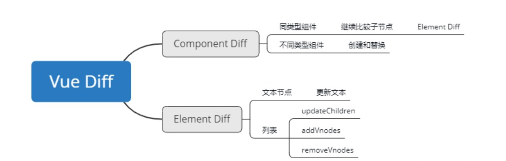
diff算法有两个比较显著的特点：
1、比较只会在同层级进行, 不会跨层级比较。
2、在diff比较的过程中，循环从两边向中间收拢。
diff流程： 首先定义 oldStartIdx、newStartIdx、oldEndIdx 以及 newEndIdx 分别是新老两个 VNode 的两边的索引。
接下来是一个 while 循环，在这过程中，oldStartIdx、newStartIdx、oldEndIdx 以及 newEndIdx 会逐渐向中间靠拢。while 循环的退出条件是直到老节点或者新节点的开始位置大于结束位置。
while 循环中会遇到四种情况：
情形一：当新老 VNode 节点的 start 是同一节点时，直接 patchVnode 即可，同时新老 VNode 节点的开始索引都加 1。
情形二：当新老 VNode 节点的 end 是同一节点时，直接 patchVnode 即可，同时新老 VNode 节点的结束索引都减 1。
情形三：当老 VNode 节点的 start 和新 VNode 节点的 end 是同一节点时，这说明这次数据更新后 oldStartVnode 已经跑到了 oldEndVnode 后面去了。这时候在 patchVnode 后，还需要将当前真实 dom 节点移动到 oldEndVnode 的后面，同时老 VNode 节点开始索引加 1，新 VNode 节点的结束索引减 1。
情形四：当老 VNode 节点的 end 和新 VNode 节点的 start 是同一节点时，这说明这次数据更新后 oldEndVnode 跑到了 oldStartVnode 的前面去了。这时候在 patchVnode 后，还需要将当前真实 dom 节点移动到 oldStartVnode 的前面，同时老 VNode 节点结束索引减 1，新 VNode 节点的开始索引加 1。
while 循环的退出条件是直到老节点或者新节点的开始位置大于结束位置。
情形一：如果在循环中，oldStartIdx大于oldEndIdx了，那就表示oldChildren比newChildren先循环完毕，那么newChildren里面剩余的节点都是需要新增的节点，把[newStartIdx, newEndIdx]之间的所有节点都插入到DOM中
情形二：如果在循环中，newStartIdx大于newEndIdx了，那就表示newChildren比oldChildren先循环完毕，那么oldChildren里面剩余的节点都是需要删除的节点，把[oldStartIdx, oldEndIdx]之间的所有节点都删除
36. Vue组件中的Data为什么是函数，根组件却是对象呢？
综上可知，如果data是一个函数的话，这样每复用一次组件，就会返回一份新的data，类似于给每个组件实例创建一个私有的数据空间，让各个组件实例维护各自的数据。而单纯的写成对象形式，就使得所有组件实例共用了一份data，就会造成一个变了全都会变的结果。
所以说vue组件的data必须是函数。这都是因为js的特性带来的，跟vue本身设计无关。
37. Vue的组件通信
1、props和$emit
父组件向子组件传递数据是通过prop传递的，子组件传递数据给父组件是通过$emit触发事件
2、$attrs和$listeners
3、中央事件总线 bus
上面两种方式处理的都是父子组件之间的数据传递，而如果两个组件不是父子关系呢？这种情况下可以使用中央事件总线的方式。新建一个Vue事件bus对象，然后通过bus.$emit触发事件，bus.$on监听触发的事件。
4、provide和inject
父组件中通过provider来提供变量，然后在子组件中通过inject来注入变量。不论子组件有多深，只要调用了inject那么就可以注入provider中的数据。而不是局限于只能从当前父组件的prop属性来获取数据，只要在父组件的生命周期内，子组件都可以调用。
5、v-model
父组件通过v-model传递值给子组件时，会自动传递一个value的prop属性，在子组件中通过this.$emit(‘input’,val)自动修改v-model绑定的值
6、$parent和$children
7、boradcast和dispatch
8、vuex处理组件之间的数据交互 如果业务逻辑复杂，很多组件之间需要同时处理一些公共的数据，这个时候才有上面这一些方法可能不利于项目的维护，vuex的做法就是将这一些公共的数据抽离出来，然后其他组件就可以对这个公共数据进行读写操作，这样达到了解耦的目的。
38. 什么情况下使用 Vuex
1 | 如果应用够简单，最好不要使用 Vuex，一个简单的 store 模式即可，需要构建一个中大型单页应用时，使用Vuex能更好地在组件外部管理状态 |
39. Vuex可以直接修改state的值吗？
1 | 可以直接修改，但是极其不推荐，state的修改必须在mutation来修改，否则无法被devtool所监测，无法监测数据的来源，无法保存状态快照，也就无法实现时间漫游/回滚之类的操作。 |
40. 为什么Vuex的mutation不能做异步操作
1 | Vuex中所有的状态更新的唯一途径都是mutation，异步操作通过 Action 来提交 mutation实现，这样使得我们可以方便地跟踪每一个状态的变化，从而让我们能够实现一些工具帮助我们更好地了解我们的应用。每个mutation执行完成后都会对应到一个新的状态变更，这样devtools就可以打个快照存下来，否则无法被devtools所监测。如果mutation支持异步操作，就没有办法知道状态是何时更新的，无法很好的进行状态的追踪，给调试带来困难。 |
41. 怎么修改Vuex中的状态？Vuex中有哪些方法
- 通过this.$store.state.属性 的方法来访问状态
- 通过this.$store.commit(‘mutation中的方法’) 来修改状态
42. Vuex的缺点
1 | 如果您不打算开发大型单页应用，使用 Vuex 可能是繁琐冗余的，并且state中的值会伴随着浏览器的刷新而初始化，无缓存。 |
43. 什么是 Vue.nextTick()？
1、$nextTick 是在下次DOM更新循环结束之后执行延迟回调。在修改数据之后立即使用这个方法，获取更新后的DOM，意思是 等你dom加载完毕以后再去调用nextTick()里面的数据内容
44. nextTick知道吗、实现的原理是什么？是宏任务还是微任务？
微任务
原理：
nextTick方法主要是使用了宏任务和微任务，定义了一个异步方法，多次调用nextTick会将方法存入队列中，通过这个异步方法清空队列。
作用： nextTick用于下次Dom更新循环结束之后执行延迟回调，在修改数据之后使用nextTick用于下次Dom更新循环结束之后执行延迟回调，在修改数据之后使用nextTick用于下次Dom更新循环结束之后执行延迟回调，在修改数据之后使用nextTick,则可以在回调中获取更新后的DOM。
45. 虚拟 dom 为什么会提高性能？
虚拟DOM其实就是一个JavaScript对象。通过这个JavaScript对象来描述真实DOM，真实DOM的操作，一般都会对某块元素的整体重新渲染，采用虚拟DOM的话，当数据变化的时候，只需要局部刷新变化的位置就好了 ,
虚拟dom相当于在js和真实dom中间加了一个缓存，利用dom diff算法避免了没有必要的dom操作，从而提高性能
具体实现步骤如下
- 用
JavaScript对象结构表示DOM树的结构；然后用这个树构建一个真正的DOM树，插到文档当中 - 当状态变更的时候，重新构造一棵新的对象树。然后用新的树和旧的树进行比较，记录两棵树差异
- 把2所记录的差异应用到步骤1所构建的真正的
DOM树上，视图就更新
46. 你做过哪些Vue的性能优化？
1、首屏加载优化
2、路由懒加载
1 | { |
3、开启服务器 Gzip
开启 Gzip 就是一种压缩技术，需要前端提供压缩包，然后在服务器开启压缩，文件在服务器压缩后传给浏览器，浏览器解压后进行再进行解析。首先安装 webpack 提供的compression-webpack-plugin进行压缩,然后在 vue.config.js：
1 | const CompressionWebpackPlugin = require('compression-webpack-plugin') |
4、启动 CDN 加速
我们继续采用 cdn 的方式来引入一些第三方资源，就可以缓解我们服务器的压力，原理是将我们的压力分给其他服务器点。
5、代码层面优化
computed 和 watch 区分使用场景
1
2computed： 是计算属性，依赖其它属性值，并且 computed 的值有缓存，只有它依赖的属性值发生改变，下一次获取 computed 的值时才会重新计算 computed 的值。当我们需要进行数值计算，并且依赖于其它数据时，应该使用 computed，因为可以利用 computed 的缓存特性，避免每次获取值时，都要重新计算；
watch：类似于某些数据的监听回调 ，每当监听的数据变化时都会执行回调进行后续操作；当我们需要在数据变化时执行异步或开销较大的操作时，应该使用 watch，使用 watch 选项允许我们执行异步操作 ( 访问一个 API )，限制我们执行该操作的频率，并在我们得到最终结果前，设置中间状态。这些都是计算属性无法做到的。v-if 和 v-show 区分使用场景 v-if 适用于在运行时很少改变条件，不需要频繁切换条件的场景；v-show 则适用于需要非常频繁切换条件的场景。这里要说的优化点在于减少页面中 dom 总数，我比较倾向于使用 v-if，因为减少了 dom 数量。
v-for 遍历必须为 item 添加 key，且避免同时使用 v-if v-for 遍历必须为 item 添加 key，循环调用子组件时添加 key，key 可以唯一标识一个循环个体，可以使用例如 item.id 作为 key 避免同时使用 v-if，v-for 比 v-if 优先级高，如果每一次都需要遍历整个数组，将会影响速度。
6、Webpack 对图片进行压缩
7、避免内存泄漏
8、减少 ES6 转为 ES5 的冗余代码
47. Vue的常用修饰符
一、v-model修饰符
1、.lazy：
输入框改变，这个数据就会改变，lazy这个修饰符会在光标离开input框才会更新数据：

2、.trim：
输入框过滤首尾的空格：

3、.number：
先输入数字就会限制输入只能是数字，先字符串就相当于没有加number，注意，不是输入框不能输入字符串，是这个数据是数字：
二、事件修饰符
4、.stop：
阻止事件冒泡，相当于调用了event.stopPropagation()方法：

5、.prevent：
阻止默认行为，相当于调用了event.preventDefault()方法，比如表单的提交、a标签的跳转就是默认事件：

6、.self：
只有元素本身触发时才触发方法，就是只有点击元素本身才会触发。比如一个div里面有个按钮，div和按钮都有事件，我们点击按钮，div绑定的方法也会触发，如果div的click加上self，只有点击到div的时候才会触发，变相的算是阻止冒泡：

7、.once：
事件只能用一次，无论点击几次，执行一次之后都不会再执行

8、.capture：
事件的完整机制是捕获-目标-冒泡，事件触发是目标往外冒泡
9、.sync
对prop进行双向绑定
10、.keyCode：
监听按键的指令，具体可以查看vue的键码对应表
48. Vue 中 template 的编译过程
vue template模板编译的过程经过parse()生成ast(抽象语法树),optimize对静态节点优化，generate()生成render字符串 之后调用new Watcher()函数，用来监听数据的变化，render 函数就是数据监听的回调所调用的，其结果便是重新生成 vnode。 当这个 render 函数字符串在第一次 mount、或者绑定的数据更新的时候，都会被调用，生成 Vnode。 如果是数据的更新，那么 Vnode 会与数据改变之前的 Vnode 做 diff，对内容做改动之后，就会更新到 我们真正的 DOM
49. 谈谈你对Vue3.0有什么了解？
六大亮点
- 性能比vue2.x快1.2~2倍
- 支持tree-shaking，按需编译，体积比vue2.x更小
- 支持组合API
- 更好的支持TS
- 更先进的组件
性能比vue2.x快1.2~2倍如何实现的呢
1.diff算法更快
vue2.0是需要全局去比较每个节点的，若发现有节点发生变化后，就去更新该节点
vue3.0是在创建虚拟dom中，会根据DOM的的内容会不会发生内容变化，添加静态标记， 谁有flag！比较谁。
2、静态提升
vue2中无论元素是否参与更新，每次都会重新创建，然后再渲染 vue3中对于不参与更新的元素，会做静态提升，只被创建一次，在渲染时直接复用即可
3、事件侦听缓存
默认情况下，onclick为动态绑定，所以每次都会追踪它的变化，但是因为是同一函数，没有必要追踪变化，直接缓存复用即可
在之前会添加静态标记8 会把点击事件当做动态属性 会进行diff算法比较， 但是在事件监听缓存之后就没有静态标记了，就会进行缓存复用
为什么vue3.0体积比vue2.x小
在vue3.0中创建vue项目 除了vue-cli，webpack外还有 一种创建方法是Vite Vite是作者开发的一款有意取代webpack的工具，其实现原理是利用ES6的import会发送请求去加载文件的特性，拦截这些请求，做一些预编译，省去webpack冗长的打包时间
50. vue3.0组合API
说一说vue3.0的组合API跟之前vue2.0在完成业务逻辑上的区别：
在vue2.0中： 主要是往data 和method里面添加内容，一个业务逻辑需要什么data和method就往里面添加，而组合API就是 有一个自己的方法，里面有自己专注的data 和method。
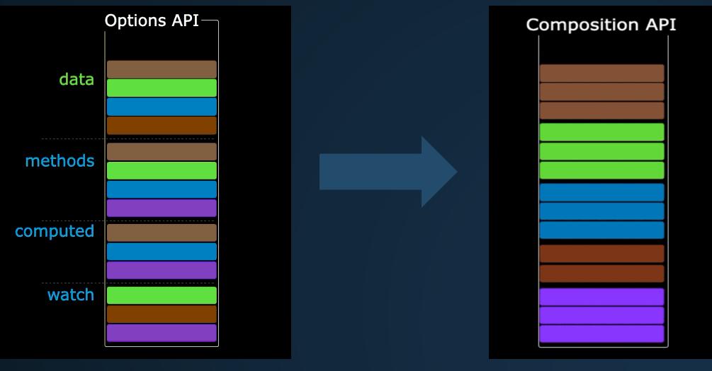 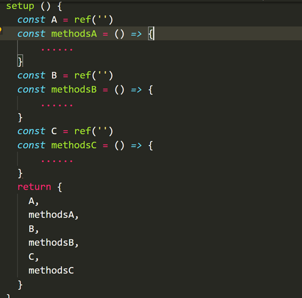 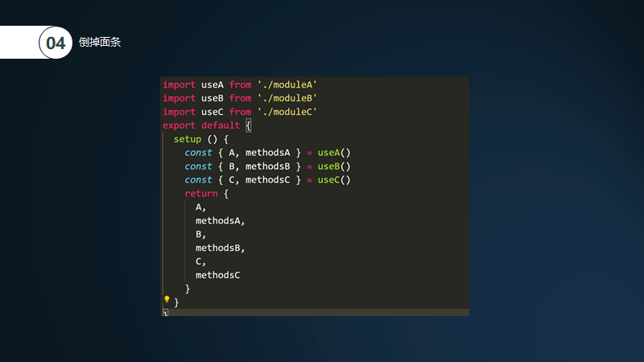再说一下组合API的本质是什么： 首先composition API（组合API） 和 Option API（vue2.0中的data和method）可以共用 composition API（组合API）本质就是把内容添加到Option API中进行使用
51. ref和reactive的简单理解
1.ref和reactive都是vue3的监听数据的方法，本质是proxy 2.ref 基本类型复杂类型都可以监听(我们一般用ref监听基本类型)，reactive只能监听对象（arr，json） 3.ref底层还是reactive，ref是对reactive的二次包装， ref定义的数据访问的时候要多一个.value
52. Vuex和redux有什么区别？他们的共同思想。
Redux和Vuex区别
- Vuex改进了Redux中的Action和Reducer函数，以mutations变化函数取代Reducer，无需switch，只需在对应的mutation函数里改变state值就可以
- Vuex由于Vue自动重新渲染的特性，无需订阅重新渲染函数，只要生成新的state就可以
- Vuex数据流的顺序是:View调用store.commit提交对应的请求到Store中对应的mutation函数 – store改变(vue检测到数据变化自动渲染)
共同思想
- 单一的数据源
- 变化可以预测
本质上:Redux和Vuex都是对MVVM思想的服务，将数据从视图中抽离的一种方案形式上:Vuex借鉴了Redux，将store作为全局的数据中心，进行数据管理
53. 简单说一下 微信小程序 与 Vue 的区别
1、生命周期：
小程序的钩子函数要简单得多 。 vue的钩子函数在跳转新页面时，钩子函数都会触发，但是小程序的钩子函数，页面不同的跳转方式，触发的钩子并不一样。
在页面加载请求数据时，两者钩子的使用有些类似，vue一般会在created或者mounted中请求数据，而在小程序，会在onLoad或者onShow中请求数据。
2、数据绑定：
vue动态绑定一个变量的值为元素的某个属性的时候，会在变量前面加上冒号：
1 | <img :src="imgSrc"/> |
小程序 绑定某个变量的值为元素属性时，会用两个大括号括起来，如果不加括号，为被认为是字符串
1 | <image src="{{imgSrc}}"></image> |
3、列表循环
4、显示与隐藏元素
vue中，使用v-if 和v-show控制元素的显示和隐藏
小程序中，使用wx-if和hidden控制元素的显示和隐藏
5、事件处理
vue：使用v-on:event绑定事件，或者使用@event绑定事件
小程序中，全用bindtap(bind+event)，或者catchtap(catch+event)绑定事件
6、数据的双向绑定
在vue中,只需要再表单元素上加上v-model,然后再绑定data中对应的一个值，当表单元素内容发生变化时，data中对应的值也会相应改变 。
当表单内容发生变化时，会触发表单元素上绑定的方法，然后在该方法中，通过this.setData({key:value})来将表单上的值赋值给data中的对应值 。
7、绑定事件传参
在vue中，绑定事件传参挺简单，只需要在触发事件的方法中，把需要传递的数据作为形参传入就可以了
在小程序中，不能直接在绑定事件的方法中传入参数，需要将参数作为属性值，绑定到元素上的data-属性上，然后在方法中，通过e.currentTarget.dataset.*的方式获取
8、父子组件通信
父组件向子组件传递数据，只需要在子组件通过v-bind传入一个值，在子组件中，通过props接收，即可完成数据的传递
父组件向子组件通信和vue类似，但是小程序没有通过v-bind，而是直接将值赋值给一个变量 在子组件properties中，接收传递的值
54. 如果你是leader，做管理系统项目 Vue和React 怎么选择？
1 | 评估项目成员的水平，如果成员js基础较好、编码能力较强则选择React，否则Vue。 |
八. React高频面试题
1. 类组件和函数组件的区别
1 | /* |
2. React 事件绑定原理
1 | /* |
3. React中的 setState 缺点是什么呢
1 | /* |
4. React 组件中 props 和 state 有什么区别？
1 | /* |
5. 虚拟DOM的优劣如何？实现原理？
1 | /* |
6. diff 和 Key 之间的联系
1 | /* |
7. React组件通信如何实现
1 | /* |
8. React中refs的作用是什么？
1 | // ref是React提供的用来操纵React组件实例或者DOM元素的接口。主要用来做文本框的聚焦、触发强制动画等； |
9. 请列举react生命周期函数。
1 | /* |
10. A 组件嵌套 B 组件，生命周期执行顺序
1 | /* |
11. 新出来两个钩子函数？和砍掉的will系列有啥区别？
1 | // react16 中废弃了三个钩子 |
12. React hooks 用过吗，为什么要用？
1 | /* |
1 | const getCinemaList = useMemo(() => cinemaList.filter(item=>item.name.toUpperCase().includes(mytext.toUpperCase()) || |
13. hooks 的使用有什么注意事项
1 | /* |
14. Hooks 会取代 render props 和高阶组件吗？
- 可以取代，但没必要
- 在Hook的渐进策略中也有提到，没有计划从React中移除class，在新的代码中同时使用Hook和class，所以这些方案目前还是可以有勇武之地
what
- 为什么要把这3种技术拿过来对比？
都在处理同一个问题，*逻辑复用*
- 高阶组件HOC—不是 React API 的一部分，是基于 React 的组合特性形成的设计模式。
高阶组件是参数为组件，返回值为新组件的函数（将组件转换为另一个组件，纯函数，无副作用）
是指一种在 React 组件之间使用一个值为函数的 prop 共享代码的 简单技术？
React16.8新增的特性，是一些可以让你在函数组件里“钩入”React state及生命周期等特性的函数，
why
虽然 *HOC* & *Render Props* 能处理逻辑复用的问题，但是却存在各自的问题。
*HOC* 存在的问题
- 写法破坏了原来组件的结构，DevTools中组件会形成“嵌套地狱”
- 不要在 render 方法中使用 HOC 每次调用render函数会创建一个新的高阶组件导致该组件及其子组件的状态丢失
- 需要修复静态方法，即拷贝原组件的静态方法到高级组件中
- 如需传递Ref则需要通过React.forwardRef创建组件
*Render Props* 存在的问题
- 同样的写法会破坏原来组件的结构，DevTools中组件会形成“嵌套地狱”
- 与React.PureComponent组件使用有冲突
*Hook* 目前最优雅的实现，React为共享状态逻辑提供最好的原生途径
- 没有破坏性改动，完全可选，100%向后兼容
- 解决复杂组件，中逻辑状态、副作用和各种生命周期函数中逻辑代码混在一起，难以拆分，甚至形成bug的问题
- 处理class组件中
when
- 在函数组件中意识到要向其添加一些state—useState
- 有副作用的行为时
where
- 只能在函数最外层调用Hook，不要在循环、条件判断或者子函数中调用
- 只能在函数组件或者自定义Hook中调用Hook
15. 列举重新渲染 render 的情况
1 | this.setState() |
16. 如何避免组件的重新渲染？
当porps/state改变时组件会执行render函数也就是重新渲染
- class组件中 使用shouldComponentUpdate钩子函数
- PureComponent默认有避免重新渲染的功能
- 函数组件使用高阶组件memo处理
17. 渲染一个react组件的过程
1 | /* |
18. 类组件怎么做性能优化？函数组件怎么做性能优化？
1 | /* |
19. React 按需加载
1 | // 1、使用React.lazy， 但是React.lazy技术还不支持服务端渲染 |
20. 纯函数有什么特点，副作用函数特点
1 | /* |
21 React 中的StrictMode(严格模式)是什么？
1 | /* |
22. 如何在 React 的 Props 上应用验证？
使用PropTypes进行类型检查
PropTypes自React v15.5起，请使用这个库prop-types
What & Why & When
- 随着应用的不断增长，也是为了使程序设计更加严谨，我们通常需要对数据的类型（值）进行一些必要的验证
- 出于性能方面的考虑，propTypes仅在开发模式下进行检测,在程序运行时就能检测出错误，不能使用到用户交互提醒用户操作错误等
- 也可以使用Flow或者TypeScript做类型检查，后期建议用typescript进行替代更好
Where
- class组件
- 函数组件
- React.memo高阶组件 *可自行扩展*
- React.forwardRef组件 *可自行扩展*
How
我们在组件类下添加一个静态属性 propTypes (属性名不能更改)，它的值也是一个对象，用来设置组件中props的验证规则，key 是要验证的属性名称，value 是验证规则。
1 | // 类组件 |
23. 什么是高阶组件、受控组件及非受控组件？都有啥区别
*定义*
- 高阶组件HOC—不是 React API 的一部分，是基于 React 的组合特性形成的设计模式。
高阶组件是参数为组件，返回值为新组件的函数（将组件转换为另一个组件，纯函数，无副作用）
在表单元素中，state是唯一数据源，渲染表单的React组件控制着用户输入过程中表单发生的操作。被React以这种方式控制取值的表单输入元素叫做受控组件
表单数据由DOM节点来处理，而不是用state来管理数据，一般可以使用ref来从DOM节点中获取表单数据
*区别*
- 受控组件和非受控组件是表单中的组件，高阶组件相当于对某个组件注入一些属性方法
- 高阶组件是解决代码复用性问题产生的技术
- 受控组件必须要有一个value，结合onChange来控制这个value，取值为event.target.value/event.target.checked
- 非受控组件相当于操作DOM，一般有个defaultValue，通过onBlur触发响应方法
24. 请你说说React的路由是什么？
1 | /* |
25. React路由懒加载的实现
- *原理*
- webpack代码分割
- React利用 React.lazy与import()实现了渲染时的动态加载
- 利用Suspense来处理异步加载资源时页面应该如何显示的问题
- 1.React.lazy
- 通过lazy() api来动态import需要懒加载的组件
- import的组件目前只支持export default的形式导出
- Suspense来包裹懒加载的组件进行加载，可以设置fallback现实加载中效果
- React.lazy可以结合Router来对模块进行懒加载。
1 | import { BrowserRouter as Router, Route, Switch } from 'react-router-dom'; |
- 2.react-loadable
react-loadable是以组件级别来分割代码的，这意味着，我们不仅可以根据路由按需加载，还可以根据组件按需加载，使用方式和路由分割一样，只用修改组件的引入方式即可
1 | // 路由懒加载（异步组件） |
- 3.webpack配置中使用lazyload-loader
1 | // webpack 配置中 |
- 4.import() webpack v2+
符合ECMAScript提议的import()语法，该提案与普通 import 语句或 require 函数的类似，但返回一个 Promise 对象
1 | function component() { |
- 5.requre.ensure webpack v1 v2
1 | require.ensure([], function(require){ |
26. React-router-dom内部是怎么样实现的，怎么做路由守卫？
内部实现
- 总
react-router-dom利用了Context API，通过上下文对象将当前路由信息对象注入到 Router 组件中，所以 Router 组件中 render() 渲染的内容就是 ContextAPI 提供的 Provider 组件，然后接收 Router 组件中的当前路由信息对象。 这样 Router 组件下的所有组件都能通过上下文拿到当前路由信息对象，即其中的Switch 、 Route 、 Link 、Redirect 等组件都可以拿到当前路由信息对象，然后通过改变当前路由信息来实现动态切换 Route 组件的渲染。
- 分
- RouterContext：react-router使用context实现跨组件间数据传递，所以react-router定义了一个routerContext作为数据源，
- Router：BrowserRouter和HashRouter将当前路由注入到上下文中，同时路由信息包含location、match、history
- Route：路由规则，获取RouterContext的信息(location对象)，获取path和component属性，判断path和当前的location是否匹配，如果匹配，则渲染component，否则返回null，不渲染任何内容
- Switch：遍历所有子元素(Route)，判断Route的path和location是否匹配，如果匹配，则渲染，否则不渲染
- Redireact：未能配则重定向到指定页面
- Link/NavLink: Link组件本质就是a标签，它修改了a标签的默认行为，当点击Link时，会导航到对应的路由，导致locaiton对象的改变，出发组件的更新
- withRouter：对传入的组件进行加强，功能就是获取routerContext上面的信息，然后作为props传给需要加强的组件
怎么做路由守卫
- 路由里设置meta元字符实现路由拦截
- React Router 4.0之前也像vue中一样有个钩子函数 onEnter 可实现
- ReactRouter 4.0开始自己实现如下
1 | // routerMap.js中 |
- 总结一下，实现路由守卫需要考虑到以下的问题：
- 未登录情况下，访问不需要权限校验的合法页面：允许访问
- 未登录情况下，访问需要权限校验的页面：禁止访问，跳转至登陆页
- 未登录情况下，访问所有的非法页面：禁止访问，跳转至 404
- 登陆情况下，访问登陆页面：禁止访问，跳转至主页
- 登陆情况下，访问除登陆页以外的合法页面：允许访问
- 登陆情况下，访问所有的非法页面：禁止访问，跳转至 404
27. React有哪些性能优化的手段？
1 | /* |
28. 描述 Flux 与 MVC？
1 | /* |
29. Redux遵循的三个原则是什么？
*单一数据源*
- 整个应用的state被存储在一棵object tree中，并且整个 object tree 只存在于唯一一个 store 中
*State是只读的*
- 唯一改变state的方法就是触发 action，action是一个描述已发生事件的普通对象
- 这样确保视图和网络请求不能直接修改state
*使用纯函数来执行修改*
- 为了描述action如何改变state tree，你需要编写reducers
30. react中使用setState不能立刻获取值，怎么办
setState 只在合成事件和钩子函数中是异步的，在原生事件和 setTimeout 中都是同步
- ①addeventListener添加的事件或者dom事件中触发
- ②setState接收的参数还可以是一个函数，在这个函数中可以拿先前的状态，并通过这个函数的返回值得到下一个状态。
1 | this.setState((preState) => { |
- ③async/await 异步调用处理
31. 聊聊 Redux 和 Vuex 的设计思想
1 | /* |
32. redux本来是同步的，为什么它能执行异步代码？中间件的实现原理是什么？
1 | /* |
33. redux中sages和thunk中间件的区别，优缺点
- 区别
- redux-thunk异步采取 async/await redux-saga采取generate函数
- 优缺点
- redux-thunk
优点： 库小，代码就几行 缺点：代码臃肿，reducer不再是纯粹函数，直接返回对象，违背了当初的设计原则；action的形式不统一，异步操作太为分散，分散在了各个action中
- redux-saga
优点： 将异步与reducer区分开了，更加优雅，适合大量APi请求，而且每个请求之间存在复杂的以来关系 缺点：学习曲线比较陡，理解async await；而且库也比较大，即使发布的最小也有25kb,gzip压缩后也有7KB,React压缩后才45kb
34. redux 和 mobx 的区别
- ①Redux的编程范式是函数式的而Mobx是面向对象的
- ②因此数据上来说Redux理想的是immutable的，每次都返回一个新的数据，而Mobx从始至终都是一份引用。因此Redux是支持数据回溯的
- ③然而和Redux相比，使用Mobx的组件可以做到精确更新，这一点得益于Mobx的observable；对应的，Redux是用dispatch进行广播，通过Provider和connect来比对前后差别控制更新粒度，有时需要自己写SCU；Mobx更加精细一点
- ④Mobx-react vs React-rdux：
redux,采取Provider和connect方式，mobx采取Provider和inject、observer
35. 什么是 immutable？为什么要使用它？
immutable是一种持久化数据。一旦被创建就不会被修改。修改immutable对象的时候返回新的immutable。但是原数据不会改变。
在Rudux中因为深拷贝对性能的消耗太大了（用到了递归，逐层拷贝每个节点）。 但当你使用immutable数据的时候：只会拷贝你改变的节点，从而达到了节省性能。 总结：immutable的不可变性让纯函数更强大，每次都返回新的immutable的特性让程序员可以对其进行链式操作，用起来更方便。
因为在react中，react的生命周期中的setState()之后的shouldComponentUpdate()阶段默认返回true，所以会造成本组件和子组件的多余的render，重新生成virtual dom，并进行virtual dom diff，所以解决办法是我们在本组件或者子组件中的shouldComponentUpdate()函数中比较，当不需要render时，不render。
当state中的值是对象时，我们必须使用深拷贝和深比较！
如果不进行深拷贝后再setState，会造成this.state和nextState指向同一个引用，所以shouldComponentUpdate()返回值一定是false，造成state值改了，而组件未渲染（这里不管shouldComponentUpdate中使用的是深比较还是浅比较）。所以必须深拷贝。
如果不在shouldComponentUpdate中进行深比较，会造成即使state中的对象值没有改变，因为是不同的对象，而在shouldComponentUpdate返回true，造成不必要的渲染。
所以只能是深拷贝和深比较。
九. 小程序高频面试题
1. 简述微信小程序原理
微信小程序采用
JavaScript、WXML、WXSS三种技术进行开发,本质就是一个单页面应用，所有的页面渲染和事件处理，都在一个页面内进行，但又可以通过微信客户端调用原生的各种接口微信的架构，是数据驱动的架构模式，它的UI和数据是分离的，所有的页面更新，都需要通过对数据的更改来实现 小程序分为两个部分webview和appService。其中webview主要用来展现UI，appService有来处理业务逻辑、数据及接口调用。它们在两个进程中运行，通过系统层JSBridge实现通信，实现UI的渲染、事件的处理
2. 简单描述下微信小程序的相关文件类型
微信小程序项目结构主要有四个文件类型
WXML（WeiXin Markup Language）是框架设计的一套标签语言，结合基础组件、事件系统，可以构建出页面的结构。内部主要是微信自己定义的一套组件WXSS(WeiXin Style Sheets)是一套样式语言，用于描述WXML的组件样式js逻辑处理，网络请求json小程序设置，如页面注册，页面标题及tabBar
主要文件
app.json必须要有这个文件，如果没有这个文件，项目无法运行，因为微信框架把这个作为配置文件入口，整个小程序的全局配置。包括页面注册，网络设置，以及小程序的window背景色，配置导航条样式，配置默认标题app.js必须要有这个文件，没有也是会报错！但是这个文件创建一下就行 什么都不需要写以后我们可以在这个文件中监听并处理小程序的生命周期函数、声明全局变量app.wxss可选
3. 小程序的双向绑定和vue哪里不一样
- 小程序直接修改
this.data的属性是不可以同步到视图的，必须调用：
1 | this.setData({ |
- 在vue中,只需要再表单元素上加上v-model,然后再绑定data中对应的一个值，当表单元素内容发生变化时，data中对应的值也会相应改变，这是vue非常nice的一点。 但是在小程序中，却没有这个功能。那怎么办呢？当表单内容发生变化时，会触发表单元素上绑定的方法，然后在该方法中，通过this.setData({key:value})来将表单上的值赋值给data中的对应值。下面是代码，可以感受一下:
1 | <input bindinput="bindReason" placeholder="填写理由" class='reason' value='{{reason}}' name="reason" /> |
当页面表单元素很多的时候，更改值就是一件体力活了。和小程序一比较，vue的v-model简直爽的不要不要的。
- 取值
vue中，通过this.reason取值
小程序中，通过this.data.reason取值
4. 如何自定义小程序的navigationBar
思路
隐藏原生样式 获取胶囊按钮、状态栏相关数据以供后续计算 根据不同机型计算出该机型的导航栏高度，进行适配 编写新的导航栏 引用到页面
参考这里
5. 说说小程序中wx:if和hidden的区别
相同点：
wx:if 与 hidden 都用来控制小程序元素的显示
不同点
wx:if：
- 1、条件为 true 时显示
- 2、当元素显示时渲染
- 3、元素变为不显示时销毁元素
hidden：
- 1、条件为 false 时显示
- 2、当元素显示时渲染
- 3、元素变为不显示时保留元素
- 4、相当于使用了dispaly
总结： 1、当元素频繁切换是否显示时使用 hidden ，因为 wx:if 会频繁地销毁渲染元素 2、当元素不频繁切换是否显示时使用 wx:if，因为 wx:if 会避免页面加载时渲染过多，导致页面加载缓慢
6. 小程序的 wxss 和 css 有哪些不一样的地方
WXSS和CSS类似，不过在CSS的基础上做了一些补充和修改
- 尺寸单位
rpx
rpx 是响应式像素,可以根据屏幕宽度进行自适应。规定屏幕宽为 750rpx。如在 iPhone6 上，屏幕宽度为 375px，共有 750 个物理像素，则 750rpx = 375px = 750 物理像素
- 使用
@import标识符来导入外联样式。@import后跟需要导入的外联样式表的相对路径，用;表示语句结束
1 | /** index.wxss **/ |
7. 小程序页面间有哪些传递数据的方法
- 使用全局变量实现数据传递
在 app.js 文件中定义全局变量 globalData， 将需要存储的信息存放在里面
1 | // app.js |
使用的时候，直接使用 getApp() 拿到存储的信息
- 使用
wx.navigateTo与wx.redirectTo的时候，可以将部分数据放在url里面，并在新页面onLoad的时候初始化
1 | //pageA.js |
需要注意的问题：
wx.navigateTo 和 wx.redirectTo 不允许跳转到 tab 所包含的页面
onLoad 只执行一次
- 使用本地缓存
Storage相关
8. 小程序的生命周期函数
onLoad页面加载时触发。一个页面只会调用一次，可以在onLoad的参数中获取打开当前页面路径中的参数,建议在此调接口onShow()页面显示/切入前台时触发，不建议在此调接口onReady()页面初次渲染完成时触发。一个页面只会调用一次，代表页面已经准备妥当，可以和视图层进行交互onHide()页面隐藏/切入后台时触发。 如navigateTo或底部tab切换到其他页面，小程序切入后台等onUnload()页面卸载时触发。如redirectTo或navigateBack到其他页面时
详见 生命周期回调函数
9. 哪些方法可以用来提高微信小程序的应用速度
1、提高页面加载速度
2、用户行为预测
3、减少默认 data 的大小
4、组件化方案
10. 微信小程序的优劣势
优势
- 即用即走，不用安装，省流量，省安装时间，不占用桌面
- 依托微信流量，天生推广传播优势
- 开发成本比
App低
缺点
- 用户留存，即用即走是优势，也存在一些问题
- 入口相对传统
App要深很多 - 限制较多,页面大小不能超过2M。不能打开超过10个层级的页面
11. 怎么解决小程序的异步请求问题
小程序支持大部分
ES6语法
- 在返回成功的回调里面处理逻辑
Promise异步
12. 小程序关联微信公众号如何确定用户的唯一性
如果开发者拥有多个移动应用、网站应用、和公众帐号（包括小程序），可通过
unionid来区分用户的唯一性，因为只要是同一个微信开放平台帐号下的移动应用、网站应用和公众帐号（包括小程序），用户的unionid是唯一的。换句话说，同一用户，对同一个微信开放平台下的不同应用，unionid是相同的
13. 如何实现下拉刷新
- 首先在全局
config中的window配置enablePullDownRefresh - 在
Page中定义onPullDownRefresh钩子函数,到达下拉刷新条件后，该钩子函数执行，发起请求方法 - 请求返回后，调用
wx.stopPullDownRefresh停止下拉刷新
参考 这里
14. bindtap 和 catchtap 的区别是什么
相同点：首先他们都是作为点击事件函数，就是点击时触发。在这个作用上他们是一样的，可以不做区分
不同点：他们的不同点主要是bindtap是不会阻止冒泡事件的，catchtap是阻止冒泡的
15. 简述微信支付的业务流程
步骤1：用户在商户APP中选择商品，提交订单，选择微信支付。
步骤2：商户后台收到用户支付单，调用微信支付统一下单接口。参见统一下单API。
步骤3：统一下单接口返回正常的prepay_id，再按签名规范重新生成签名后，将数据传输给APP。参与签名的字段名为
appid，partnerid，prepayid，noncestr，timestamp，package。注意：package的值格式为Sign=WXPay步骤4：商户APP调起微信支付。
1
2
3
4
5
6
7
8
9wx.requestPayment({
timeStamp: '',
nonceStr: '',
package: '',
signType: 'MD5',
paySign: '',
success (res) { },
fail (res) { }
})步骤5：商户后台接收支付通知。
api参见支付结果通知API步骤6：商户后台查询支付结果。，
api参见查询订单API（查单实现可参考：支付回调和查单实现指引） 详情参考这里
16. 什么是小程序自定义组件样式隔离,他有哪几种隔离模式？
默认情况下，自定义组件的样式只受到自定义组件 wxss 的影响。除非以下两种情况：
app.wxss或页面的wxss中使用了标签名选择器（或一些其他特殊选择器）来直接指定样式，这些选择器会影响到页面和全部组件。通常情况下这是不推荐的做法。- 指定特殊的样式隔离选项
styleIsolation。
1 | Component({ |
styleIsolation 选项从基础库版本 2.6.5 开始支持。它支持以下取值：
isolated表示启用样式隔离，在自定义组件内外，使用 class 指定的样式将不会相互影响（一般情况下的默认值）；apply-shared表示页面 wxss 样式将影响到自定义组件，但自定义组件 wxss 中指定的样式不会影响页面；shared表示页面 wxss 样式将影响到自定义组件，自定义组件 wxss 中指定的样式也会影响页面和其他设置了apply-shared或shared的自定义组件。（这个选项在插件中不可用。）
17. 在小程序中又哪些方法让图片宽高比例保持不变？
使用mode：widthFix
widthFix：宽度不变，高度自动变化，保持原图宽高比不变。 首先我们先设置image的mode为widthFix，然后给图片加一个固定rpx的宽度，比如：730rpx。 这样图片也可以自适应了。。因为小程序的rpx本身就是一个自适应显示的单位
18. 小程序组件传参(父子，子父)
父传子
自定义属性，属性的值来自声明式变量 子组件通过props接收
子传父
自定义事件，父组件通过事件接收子组件传过来的值 自定义封装组件的例子：
1 | <component-tag-name inner-text="Some text"></component-tag-name> |
19. 小程序组件生命周期
1 | Component({ |
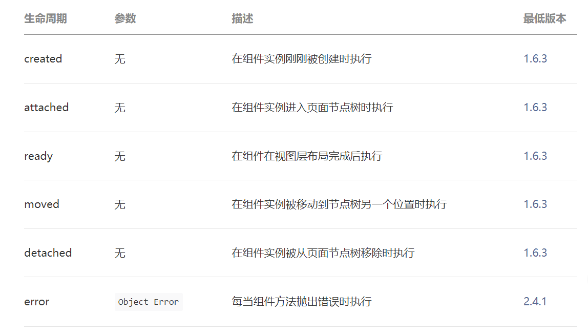
20. 小程序页面生命周期
- 1、小程序注册完成后，加载页面，触发
onLoad方法，一个页面只会调用一次。 - 2、页面载入后触发
onShow方法，显示页面，每次打开页面都会调用一次。 - 3、首次显示页面，会触发
onReady方法，渲染页面元素和样式，一个页面只会调用一次。 - 4、当小程序后台运行或跳转到其他页面时，触发
onHide方法。 - 5、当小程序有后台进入到前台运行或重新进入页面时，触发
onShow方法。 - 6、当使用重定向方法
wx.redirectTo(OBJECT)或关闭当前页返回上一页wx.navigateBack()，触发onUnload
21. 小程序怎么样实现路由传参
wx.navigateTo
1
2
3
4wx.navigateTo({
url: '../placeIntroduce/placeIntroduce?placeId=2',//在路径后面拼接
})
另外一个页面通过onload(options)这个生命周期获取到placeId
1 |
|
22. 小程序中的路由跳转switchTab navigateTo redirectTo的区别
- wx.navigateTo()：保留当前页面，跳转到应用内的某个页面。但是不能跳到
tabbar页面 - wx.redirectTo()：关闭当前页面，跳转到应用内的某个页面。但是不允许跳转到
tabbar页面 - wx.switchTab()：跳转到
abBar页面，并关闭其他所有非tabBar页面 - wx.navigateBack()关闭当前页面，返回上一页面或多级页面。可通过
getCurrentPages()获取当前的页面栈，决定需要返回几层 - wx.reLaunch()：关闭所有页面，打开到应用内的某个页面
23. 小程序tabbar实现原理
要实现tabbar的导航条其实很简单，我们要实现全局的tabbar只需要在app.json文件中定义即可，局部的就在局部的tabbar文件中实现。
来看看app.json代码：
1
2
3
4
5
6
7
8
9
10
11
12
13
14
15
16
17
18
19
20
21
22
23
24
25
26
27
28
29
30
31
32
33
34
35
36
37
38
39
40
41
42
43
44
45
46
47export default {
pages: [
'pages/index/index',
"pages/search/search",
'pages/news/news',
'pages/attention/attention',
'pages/collect/collect',
'pages/comment/comment',
'pages/my/my',
"pages/detail/detail",
"pages/chat/chat",
],
window: {
backgroundTextStyle: 'light',
navigationBarBackgroundColor: '#fff',
navigationBarTitleText: '小红书',
navigationBarTextStyle: 'black',
enablePullDownRefresh: true
},
tabBar: {
"list": [
{
"pagePath": "pages/index/index",
"text": "首页",
"iconPath": "assets/tabbar/1.png",
"selectedIconPath": "assets/tabbar/2.png"
},
{
"pagePath": "pages/news/news",
"text": "消息",
"iconPath": "assets/tabbar/news1.png",
"selectedIconPath": "assets/tabbar/news2.png"
},
{
"pagePath": "pages/my/my",
"text": "我的",
"iconPath": "assets/tabbar/3.png",
"selectedIconPath": "assets/tabbar/4.png"
}
]
},
permission: {
"scope.userLocation": {
"desc": "为了更好的为你服务，请允许访问你的地址"
}
}
}参考这里
24. 小程序性能为什么那么好，为什么能做到即用即走的效果
- 因为是轻量级的，代码包体积限制在2M以内，如果超过2M还可以进行分包，提高性能优化
- 运行在微信端,很多功能只需要使用API来实现，就可以实现跟APP的一样的功能
- 是基于微信宿主环境的，微信客户端提供双线程去执行wxml, wxss, js文件，让小程序可以快速的一下将数据渲染出来呈现在用户的面前
十. 网络面试真题
1. url从输入到渲染页面的全过程
- 浏览器构建HTTP Request请求， DNS解析URL地址、生成HTTP请求报文、构建TCP连接、使用IP协议选择传输路线
- 将请求通过网络传输到服务端 从客户机到服务器需要通过许多网络设备，一般包括集线器、交换器、路由器等
- 服务器构建HTTP Response响应，响应客户端的请求
- 将响应体的数据通过网络传输返回给客户端
- 浏览器渲染页面 解析HTML、CSS、JS，生成RenderTree渲染页面
2. tcp三次握手，四次挥手，可靠传输原理
三次握手
第一次握手：客户端发送syn报文，并发送seq为x序列号给服务端，等待服务端的确认。
第二次握手：服务端发送syn+ack报文，并发送seq为Y的序列号，在确认序列号为x+1
第三次握手：客户端发送ack报文，并发送seq序列号为z，在确认序列号为y+1
四次挥手
第一次挥手：先由客户端向服务器端发送一个FIN，请求关闭数据传输。
第二次挥手：当服务器接收到客户端的FIN时，向客户端发送一个ACK，其中ack的值等于FIN+SEQ
第三次挥手：然后服务器向客户端发送一个FIN，告诉客户端应用程序关闭。
第四次挥手：当客户端收到服务器端的FIN是，回复一个ACK给服务器端。其中ack的值等于FIN+SEQ
3. http200 和 302 的区别
- http_200的意思是 成功处理了请求
- http_302的意思是（临时移动）服务器目前从不同位置的网页响应请求， 但请求者应继续使用原有位置来进行以后的请求。
4. 你知道哪些http首部字段？
| 首部字段名 | 说明 |
|---|---|
| Cache-Control | 控制缓存的行为 |
| Connection | 逐跳首部、连接的管理 |
| Date | 创建报文的日期时间 |
| Program | 报文指令 |
| Trailer | 报文末端的首部一览 |
| Transfer-Encoding | 指定报文主体的传输编码方式 |
| Upgrade | 升级为其他协议 |
| Via | 代理服务器的相关信息 |
| Warning | 错误通知 |
| Authorization | Web认证信息 |
5. 说一下http缓存策略，有什么区别，分别解决了什么问题？
浏览器每次发起请求时，先在本地缓存中查找结果以及缓存标识，根据缓存标识来判断是否使用本地缓存, 如果缓存有效，则使用本地缓存。
向服务器发起请求并携带缓存标识。根据是否需向服务器发起HTTP请求， 将缓存过程划分为两个部分：强制缓存和协商缓存，强缓优先于协商缓存。
- 强缓存，服务器通知浏览器一个缓存时间，在缓存时间内，下次请求，直接用缓存，不在时间内，执行比较缓存策略。
- 协商缓存，让客户端与服务器之间能实现缓存文件是否更新的验证、提升缓存的复用率， 将缓存信息中的Etag和Last-Modified,通过请求发送给服务器，由服务器校验，返回304状态码时，浏览器直接使用缓存。
- 解决问题
1.减少了冗余的数据传输
2.减少了服务器的负担，大大提升了网站的性能
3.加快了客户端加载网页的速度
6. 为什么浏览器要限制TCP的最大个数
建立一个tcp连接需要：1，socket文件描述符；2，IP地址；3，端口；4，内存
1、内存资源： 一个tcp连接最小占用内存为4096+4096 = 8k， 那么对于一个8G内存的机器，在不考虑其他限制下， 最多支持的并发量为：810241024/8 约等于100万， 在实际中，由于linux kernel对一些资源的限制， 加上程序的业务处理，所以，8G内存是很难达到100万连接的
2、CPU资源
7. HTTP2.0的特点
HTTP2.0大幅度的提高了web性能，在HTTP1.1完全语意兼容的基础上，进一步减少了网络的延迟。
1、二进制分帧
2、多路复用
3、首部压缩
4、流量控制
5、请求优先级
6、服务器推送
8. 说一下HTTP2 多路复用原理，以及多路复用优势？

HTTP/1.1中的消息是“管道串形化”的：只有等一个消息完成之后，才能进行下一条消息；而HTTP/2中多个消息交织在了一起，这无疑提高了“通信”的效率。这就是多路复用：在一个HTTP的连接上，多路“HTTP消息”同时工作。
9. 简述https原理，以及与http的区别
HTTP协议工作在80端口，HTTPS协议工作在443端口
HTTPS需要申请证书（用于验证服务器身份）
HTTP在TCP三次握手建立连接之后即可开始传输数据；HTTPS协议则需要在建立TCP连接之后客户端与服务器在进行SSL加密，确定对话密钥，完成加密后才开始传输数据。
HTTPS协议传输是密文，HTTP协议传输是明文
10. CDN 是什么？描述下 CDN 原理？为什么要用 CDN?
CDN的全称是Content Delivery Network，即内容分发网络 共有云厂商在全世界各地都遍布不计其数都数据中心和服务器， CDN服务简单来讲就是这些厂商将你的服务器上面的文档分发到他们不同地区的服务器的当中， 每个地区可以称为一个节点，这样用户在访问你的网址时， 浏览器发送的请求就会优先绕去离客户最近的节点来获取数据， 这样方便客户更快的速度访问网站。 CDN是构建在现有网络基础之上的智能虚拟网络，依靠部署在各地的边缘服务器， 通过中心平台的负载均衡、内容分发、调度等功能模块，使用户就近获取所需内容， 降低网络拥塞，提高用户访问响应速度和命中率。CDN的关键技术主要有内容存储和分发技术。
11. 为什么form表单提交没有跨域问题，但ajax有跨域问题
浏览器的策略本质是：一个域名下面的JS，没有经过允许是不能读取另一个域名的内容，但是浏览器不阻止你向另外一个域名发送请求。 所以form表单提交没有跨域问题，提交form表单到另外一个域名，原来页面是无法获取新页面的内容，或者说form提交后不需要返回，但是ajax是需要返回的。 而ajax是想要读取响应内容，浏览器是不允许你这么做的。 浏览器的安全策略限制的是js脚本，并不限制src，form表单提交之类的请求， 就是说form表单提交不存在安全问题，ajax提交跨域存在安全问题。
十一. 高频算法-排序算法
1. 冒泡排序
冒泡排序比较所有相邻的两个项，如果第一个比第二个大，则交换它们。元素项向上移动至 正确的顺序，就好像气泡升至表面一样，冒泡排序因此得名。
1 | function bubbleSort(array) { |
2. 选择排序
选择排序算法是一种原址比较排序算法。选择排序大致的思路是找到数据结构中的最小值并 将其放置在第一位，接着找到第二小的值并将其放在第二位，以此类推。
1 | function selectionSort(array) { |
3. 插入排序
插入排序每次排一个数组项，以此方式构建最后的排序数组。
1 | function insertionSort(array) { |
4. 归并排序
归并排序是一种分而治之算法。其思想是将原始数组切分成较小的数组，直到每个小数组只 有一个位置，接着将小数组归并成较大的数组，直到最后只有一个排序完毕的大数组。

1 | function mergeSort(array) { |
5. 快速排序
1 | function quickSort(arr){ |
6. 计数排序
计数排序使用一个用来存储每个元素在原始 数组中出现次数的临时数组。在所有元素都计数完成后，临时数组已排好序并可迭代以构建排序 后的结果数组。
1 | function countingSort(array) { |
7. 桶排序
桶排序（也被称为箱排序）也是分布式排序算法，它将元素分为不同的桶（较小的数组）， 再使用一个简单的排序算法，例如插入排序（用来排序小数组的不错的算法），来对每个桶进行 排序。然后，它将所有的桶合并为结果数组。
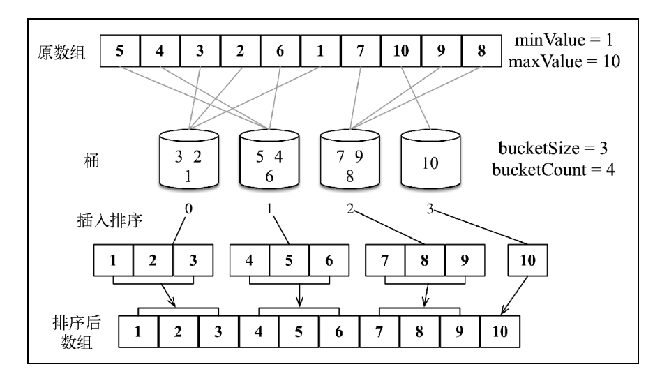
1 | function insertSort(arr) { |
8. 基数排序
基数排序也是一个分布式排序算法，它根据数字的有效位或基数（这也是它为什么叫基数排 序）将整数分布到桶中。基数是基于数组中值的记数制的。
1 | const arr = [35, 2, 26, 2, 5, 8, 34, 1, 56, 99, 33]; |
十二. 高频算法-搜索算法
1. 顺序搜索
顺序或线性搜索是最基本的搜索算法。它的机制是，将每一个数据结构中的元素和我们要找 的元素做比较。顺序搜索是最低效的一种搜索算法。
1 | function sequentialSearch(array, value) { |
2.二分搜索

1 | var Arr = [5, 7, 4, 2, 9]; |
3.内插搜索
内插搜索是改良版的二分搜索。二分搜索总是检查 mid 位置上的值，而内插搜索可能会根 据要搜索的值检查数组中的不同地方。

1 | var arr = [5, 7, 4, 2, 9]; |
十三. 高频算法-随机算法
迭代数组，从最后一位开始并将当前位置和一个随机位置进行交换。这个随机位 置比当前位置小。这样，这个算法可以保证随机过的位置不会再被随机一次
1 | function shuffle(array) { |
十四. 高频算法-算法设计
1.分而治之
分而 治之是算法设计中的一种方法。它将一个问题分成多个和原问题相似的小问题，递归解决小问题， 再将解决方式合并以解决原来的问题。
分而治之算法可以分成三个部分。
(1) 分解原问题为多个子问题（原问题的多个小实例）。
(2) 解决子问题，用返回解决子问题的方式的递归算法。递归算法的基本情形可以用来解决子 问题。
(3) 组合这些子问题的解决方式，得到原问题的解。
2.动态规划
动态规划（dynamic programming，DP）是一种将复杂问题分解成更小的子问题来解决的优 化技术。
用动态规划解决问题时，要遵循三个重要步骤：
(1) 定义子问题；
(2) 实现要反复执行来解决子问题的部分；
(3) 识别并求解出基线条件。
2-1 背包问题
背包问题是一个组合优化问题。它可以描述如下：给定一个固定大小、能够携重量 W 的背 包，以及一组有价值和重量的物品，找出一个最佳解决方案，使得装入背包的物品总重量不超过 W，且总价值最大。


1 | function knapSack(weights, values, W) { |
2-2 最长公共子序列
找出两个字符 串序列的最长子序列的长度。最长子序列是指，在两个字符串序列中以相同顺序出现，但不要求 连续（非字符串子串）的字符串序列。


1 | function LCS(str1, str2) { |
3. 贪心算法
在对问题求解时，总是做出在当前看来是最好的选择。也就是说，不从整体最优上加以考虑，他所做出的仅是在某种意义上的局部最优解。贪心算法不是对所有问题都能得到整体最优解，但对范围相当广泛的许多问题他能产生整体最优解或者是整体最优解的近似解。


1 | function tanx(capacity, weights, values) { |
十五. 手写代码&场景题
1.手写Promise
1 | /* |
2.手写实现发布/订阅模式
1 | class Subject { //定义被观察者 |
3. 手写代码，监测数组变化，并返回数组长度
1 | //手写代码，监测数组变化，并返回数组长度 |
4. 手写ajax
1 | //1.创建对象 |
5.手写深拷贝
1 | //1 |
6. Antd-树组件-点击变成输入框-输入完还能保存
1 | import React, { useState } from 'react'; |
7. 场景
经过两个月“选课系统“开发，测试，上线，”选课系统“服务于学校教学的第一站，参与选课学校的学生上午8点集中开测。市场反馈有如下情况：
1）打开网站出现502
2）登录进不去系统
3）提交数据一致反复
4）有时出现白屏现象
对于市场反馈情况谈谈你的认识？
1 | 首先，502错误，意思是worker进程忙不过来，参与选课的学生上午8点集中开测，在短时间内访问人数过多导致积累了大量的请求，后台服务器忙不过来。解决方法贵公司可以看看CPU和内存满没满，没满就多开一些worker，满了就多加一些机子。也可能是数据库响应缓慢，然后人多了数据库是否能撑住也是一个考虑，多用一些缓存吧。 |
十六. 综合题目
1. 项目研发流程中作为前端开发一般扮演的啥角色？
1 | 前端开发一般扮演着一个“团队核心废物”的角色。为什么这么说，首先在项目的研发中，UI小姐姐总感觉前端开发的页面满足不了她们的设计理念，说你没品味；后端小哥哥觉得前端开发就像只会写写样式的js交互工程师，像极了一个破美工的；测试小哥哥拿着测试报告说：这锅谁他娘的来背一下。还记得当年那个请你根据手机壳的颜色，来实现APP启动的颜色的产品经理嘛？这些对前端开发的误会难道不能折射出前端是团队里最应该学会沟通的人嘛？ |
2. 项目中让你印象深刻的问题
1 | 之前用vue做了一个动态官网项目，后期客户要求seo，百度上之前搜索不到官网地址，后来在项目的入口文件index.html页面加上了，固定的meta标签，加上name名为keywords、description的meta标签。以上做了个简单的seo优化，这个项目有几个官网，但是其中只有一个官网要求seo，也就是在百度能够搜索到，当时为了应急，就写死了，但是，其它的网站也就会受到干扰了，也就是对于一个项目对应几个官网，写死的meta标签做seo是不科学的。 |
3. 项目开发中有遇到什么挑战没？
1.问题描述：1）简单介绍这个项目规模、背景2）什么情况下遇到什么样的问题
2.你处理这个问题的过程及结果：1）遇到问题你如何思考；2）你如何执行的；3）处理结果如何
3.通过处理这个问题，你学到了什么或者说通过这个问题，你看到了你们什么不足，后续动作（采用什么样的方式，在以后的项目中避免再出现这类问题）
1 | 1.（使用缓存处理） |
注意：这个时候你就要说你最擅长的，一定是你最擅长的点，告诉他这个问题怎么解决，一定是你最懂的，而且经得起推敲的解决方案。你要准备的不仅仅是你的项目中有哪些难点，更重要的是和这个难点相关的知识都要准备充分。所以，你的答案并不是这个项目中最难的点，而是一个最能让你回答好整套相关问题的难点。
4. 谈谈对前后端分离的理解。
1 | 在我看来，前后端分离给开发工作带来了很多好处，在以前，没有这个概念的时候，一种经典的设计模式MVC模式。前端开发很不盛行，几乎很多后端程序员就兼顾了前端开发工作，前后端耦合性极强，在jsp时代，前端写好的页面最后要和后端实现交互，需要程序员手动的更改代码，这是很大的一个工作量，这种事情交给前端还是后端？谁都不愿意做吧！ |
5. 项目负责什么
1 | 1. 这个项目的列表展示与详情页是我负责的。我对于后端传递的数据进行了怎样的处理，在异步请求中选择了一定的异步分割处理数据，拆分一次性阻塞主线程的时间，可以减少用户的等待，页面滚动时选择节流，减少无效的axios请求等等，对自己模块所负责的内容，进行梳理。 |
6. 流程&规范
1) 对接UI与交互
(1)原型
axure （发音：Ack-sure）
生成的html代码,页面代码杂乱，代码冗余量较大，不利于后期的优化墨刀
https://free.modao.cc/app/ltnSwMXEFqjon7QtRssBgKkPXZmL3os#screen=s6A4B80F6FE1540952810987蓝湖
https://lanhuapp.com/
(2)标注图
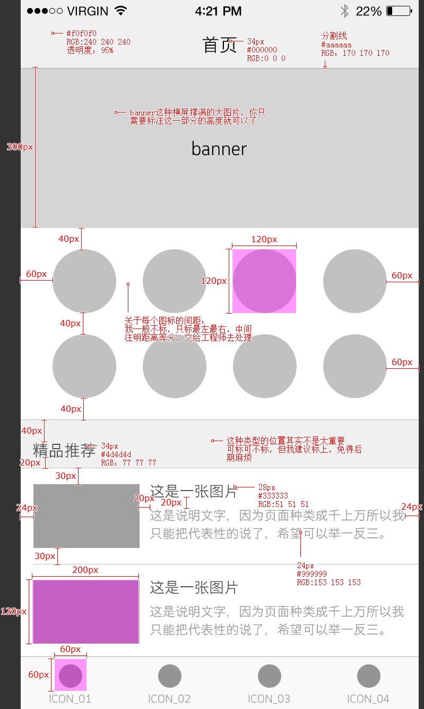
(3)谁来切图
UI? 前端？后端？
2) 对接后端
(1) 亲嘴对接
(2) 接口文档
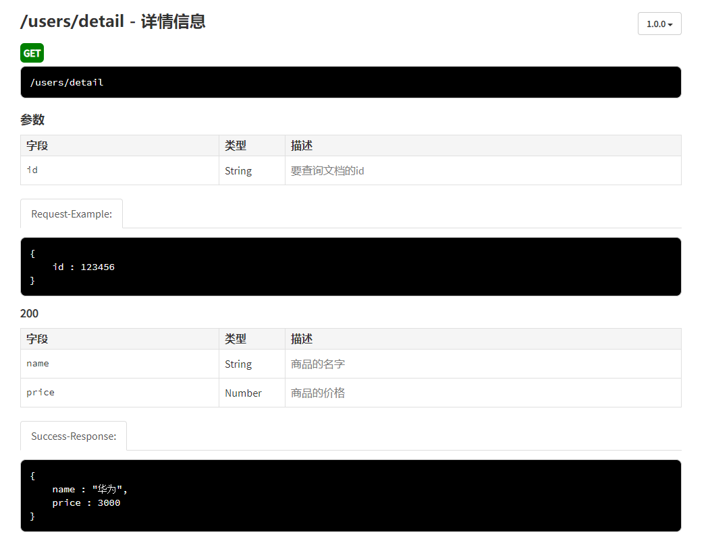
3)多环境
| 英文缩写 | 英文 | 中文 |
|---|---|---|
| DEV | development | 开发 |
| SIT | System Integrate Test | 系统整合测试（内测） |
| UAT | User Acceptance Test | 用户验收测试 |
| PET | Performance Evaluation Test | 性能评估测试（压测） |
| PROD | production | 产品/正式/生产 |
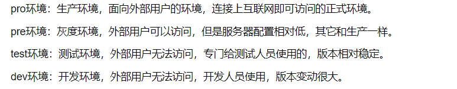
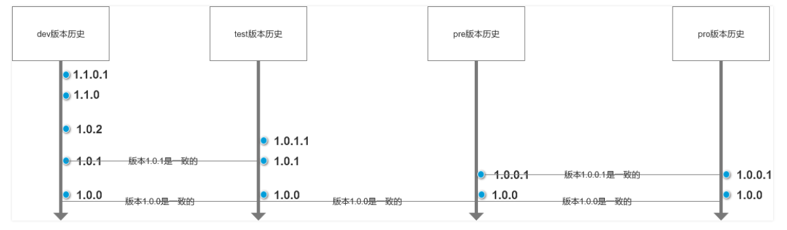
保证pre的版本和pro环境的版本一致，如果pro环境出现bug,我们只需要在pre环境fix bug,从1.0.0 ==>1.0.0.1 ,不会影响开发进度以及测试进度(不用单独创建分支修改)
7. 工作中能够持续学习么？
1 | 工作中当然可以持续学习，我认为每次对自己的总结就是很好学习机会，可以是工作上的总结，生活上的总结，某一件小事的总结都可以学习。 |
8. 为什么辞职
1 | 在上一家公司，我也想过要早些辞职，但是考虑某个未完成的重要项目、或是继任者短期内还不能胜任角色所以晚了一些。主要离职的原因是在上一家公司待的时间比较长了，公司的各种业务已经非常熟练了，感觉工作成了流水线般的生产工具，技术达到了一定的瓶颈，我觉得我应该跳出舒适圈去接触更多的新技术与新的业务从而扩展自己的技术广度。我觉得贵公司的技术要求与我非常符合，有一些我自己非常熟练或精通的技术，更重要的事有一些我之前只是自己业余时间研究过但一直没有几乎用于实战的技术。我相信贵公司的岗位对我虽然有一定的挑战信但是会给我带来更多的提升机会。同时我上一家公司中用的React加koa框架做的项目也有很多设计上的亮点，我也可以将上一家优秀完整的项目开发流程与管理经验，项目设计思路与贵公司分享。完成互利互惠共同成长。 |